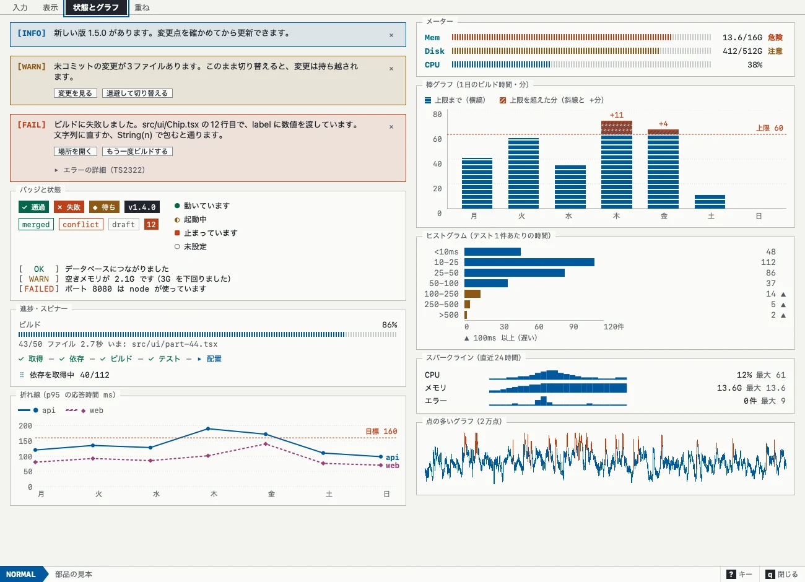

<title>Kodou-ui</title>
<meta name="claude:viewport-fit-sides" content="cover">
<link rel="preconnect" href="https://fonts.googleapis.com">
<link rel="preconnect" href="https://fonts.gstatic.com" crossorigin>
<link rel="stylesheet" href="https://fonts.googleapis.com/css2?family=JetBrains+Mono:wght@400;700;800&family=BIZ+UDGothic:wght@400;700&display=swap">
<style>
/* 配置: 主張（CUI の楽しさを今の画面に）→ 入れ方 → 3 つの楽しさ → サンプル → 部品の見本。見本とサンプルは押すとモーダルで開いて触れる。明るい地だけ */
:root {
  color-scheme: light;
  --bg: #FBFBF8; --panel: #FFFFFF; --fg: #20242B; --dim: #575B63; --faint: #6E727A; --deco: #B9BBBF; --ui: #84878D; --rule: rgba(32,36,43,.22); --rule-soft: rgba(32,36,43,.07);
  --sel-bg: #20242B; --sel-fg: #FBFBF8; --on: #FFFFFF;
  --accent: #0058A0; --green: #00654A; --red: #BE3F0E; --yellow: #8A5800; --cyan: #006A8C;
  --font: "JetBrains Mono", "BIZ UDGothic", ui-monospace, Menlo, monospace;
  --font-read: "Hiragino Sans", "Hiragino Kaku Gothic ProN", "Yu Gothic UI", Meiryo, system-ui, "BIZ UDGothic", sans-serif;
}
* { box-sizing: border-box }
body { background: var(--bg); color: var(--fg); font: 15px/1.85 var(--font-read); -webkit-font-smoothing: antialiased; font-variant-numeric: tabular-nums }
a { color: var(--accent) }
:focus-visible { outline: 2px solid var(--accent); outline-offset: 2px }
.wrap { max-width: 1120px; margin: 0 auto; padding-left: max(20px, env(safe-area-inset-left, 0px)); padding-right: max(20px, env(safe-area-inset-right, 0px)) }
.ph { display: inline-block }
kbd { font: 12px var(--font); border: 1px solid var(--rule); border-bottom-width: 2px; padding: 0 5px; color: var(--dim); background: var(--panel); white-space: nowrap }

.top { border-bottom: 1px solid var(--rule) }
.top .wrap { display: flex; align-items: center; gap: 2ch; min-height: 48px; font: 13px var(--font) }
.top .name { font-weight: 800 }
.top .sp { flex: 1 }
.top a { color: var(--dim); text-decoration: none } .top a:hover { color: var(--fg) }

/* 主張 */
.hero { padding-block: 72px 24px }
.eyebrow { font: 13px var(--font); color: var(--faint); margin: 0 0 18px }
h1 { margin: 0; font: 800 clamp(52px, 10vw, 112px)/1 var(--font); letter-spacing: -.03em }
.sub { margin: 18px 0 0; font: 900 clamp(26px, 4.4vw, 44px)/1.3 var(--font-read); letter-spacing: -.01em }

/* タイトルの左のハート: 静かに打つ */
h1 { display: flex; align-items: center; gap: .28em }
h1 .heart { flex: none; width: .78em; height: .78em; color: var(--red); transition: transform 90ms ease-out }
h1 .heart.on { transform: scale(1.22) }
h1 .heart.soft { transform: scale(1.08) }
@media (prefers-reduced-motion: reduce) { h1 .heart { transition: none } }
.lead { margin: 26px 0 0; font-size: 17px; line-height: 1.95; color: var(--dim); max-width: 36em }
.lead b { color: var(--fg) }
.try { margin-top: 26px; display: flex; flex-wrap: wrap; gap: 8px 2ch; align-items: center; font: 13px var(--font); color: var(--faint) }

/* 3 つの楽しさ */
.three { display: grid; grid-template-columns: repeat(3, minmax(0, 1fr)); gap: 0; border-block: 1px solid var(--fg); margin-top: 48px }
.three > div { padding: 26px 22px 24px }
.three > div + div { border-left: 1px solid var(--rule) }
.three .no { font: 13px var(--font); color: var(--faint) }
.three h2 { margin: 6px 0 10px; font: 900 26px/1.4 var(--font-read) }
.three ul { margin: 4px 0 0; padding: 0; list-style: none; font: 13px/1.9 var(--font) }
.three li::before { content: "> "; color: var(--faint) }

/* 入れ方（タイトルの下） */
.get { margin-top: 30px; max-width: 760px }
.get p { margin: 12px 0 0; font-size: 14px; color: var(--dim) }

/* 見本のツール: 変更したファイルを選んでコミットする */
.tool { background: var(--panel); font: 13.5px/1.7 var(--font); outline: none }
.tl-hd { display: flex; align-items: center; gap: 2ch; padding: 6px 1ch; border-bottom: 1px solid var(--rule); white-space: nowrap; overflow: hidden }
.tl-hd > span, .tl-hd > b { display: inline-flex; align-items: center; gap: .8ch }
.tl-x { border: 1px solid var(--rule); background: var(--panel); color: var(--dim); font: 12px var(--font); padding: 0 8px; min-height: 26px; cursor: pointer; display: inline-flex; align-items: center; gap: .8ch }
.tl-x:hover { color: var(--fg); border-color: var(--fg) }
.tl-hd b { font-weight: 800 } .tl-hd .sp { flex: 1 } .tl-hd .dim { color: var(--faint) }
.tl-body { display: grid; grid-template-columns: minmax(0, 1fr) minmax(0, 1.25fr); height: 340px }
.tl-list { border-right: 1px solid var(--rule); overflow: auto; padding: 4px 0 }
.tl-row { display: grid; grid-template-columns: 3ch 2ch 12px minmax(0, 1fr) auto; gap: 0 1ch; padding: 0 1ch; white-space: nowrap; cursor: pointer; min-height: 24px; align-items: center }
.tl-row > span:nth-child(4) { overflow: hidden; text-overflow: ellipsis }
.tl-row .fi { display: flex; color: var(--dim) } .tl-row.on .fi { color: inherit }
.tl-row:hover:not(.on) { background: var(--rule-soft) }
.tl-row.on { background: var(--sel-bg); color: var(--sel-fg) }
.tl-row .ck { color: var(--faint) } .tl-row .ck.x { color: var(--green); font-weight: 800 }
.tl-row .st { font-weight: 800 } .st.M { color: var(--yellow) } .st.A { color: var(--green) } .st.D { color: var(--red) }
.tl-row .nm { font-size: 12px; color: var(--faint) }
.tl-row.on .ck, .tl-row.on .st, .tl-row.on .nm { color: inherit }
.tl-diff { margin: 0; padding: 6px 1ch; overflow: auto; font: 12.5px/1.7 var(--font); white-space: pre; font-variant-ligatures: none }
.tl-diff .a { color: var(--green) } .tl-diff .d { color: var(--red) } .tl-diff .h { color: var(--cyan) } .tl-diff .c { color: var(--faint) }
.tl-cmd { display: none; align-items: center; gap: 1ch; padding: 4px 1ch; border-top: 1px solid var(--rule) }
.tl-cmd.open { display: flex }
.tl-cmd input { flex: 1; min-width: 0; border: 0; outline: none; background: transparent; font: inherit; color: var(--fg) }
.tl-sl { display: flex; align-items: center; background: var(--sel-bg); color: var(--sel-fg); font-size: 12.5px; min-height: 28px; white-space: nowrap; overflow: hidden }
.tl-sl .md { background: var(--accent); color: var(--on); font-weight: 800; padding: 4px 1ch } .tl-sl .md.ins { background: var(--green) }
.tl-sl .msg2 { flex: 1; min-width: 0; padding: 0 1ch; overflow: hidden; text-overflow: ellipsis; display: flex; align-items: center; gap: .8ch }
.tl-sl .msg2 .ok { color: #7FD3B0 } .tl-sl .msg2 .ng { color: #F2A27E }
.tl-sl .ky { padding: 0 1ch; opacity: .75 }
.tl-keys { padding: 8px 1ch; border-top: 1px dashed var(--rule); display: flex; flex-wrap: wrap; gap: 4px 2ch; font: 12px var(--font); color: var(--faint) }
@media (max-width: 680px) { .tl-hd .dim { display: none } .tl-body { grid-template-columns: minmax(0, 1fr); height: auto } .tl-list { border-right: 0; border-bottom: 1px solid var(--rule); max-height: 170px } .tl-diff { height: 200px } .tl-sl .ky { display: none } }

/* ツールの起動: 枠を押すとモーダルで開く */
.launch { display: grid; grid-template-columns: minmax(0, 560px); gap: 22px }
.lc { border: 1px solid var(--ui); background: var(--panel); padding: 18px 16px 14px; display: grid; grid-template-columns: auto minmax(0, 1fr); gap: 4px 14px; text-align: left; font: 13.5px/1.65 var(--font-read); color: var(--fg); cursor: pointer }
.lc:hover, .lc:focus-visible { border-color: var(--fg) }
.lc .lic { grid-row: span 2; width: 48px; height: 48px; display: grid; place-items: center; background: var(--sel-bg); color: var(--sel-fg) }
.lc .lnm { font: 800 15px var(--font); display: flex; align-items: center; gap: 1ch }
.lc .lnm kbd { margin-left: auto }
.lc .lds { color: var(--dim); font-size: 13.5px }
.lc .lmt { grid-column: 1 / -1; display: flex; flex-wrap: wrap; gap: 4px 2ch; margin-top: 8px; padding-top: 8px; border-top: 1px dashed var(--rule); font: 12px var(--font); color: var(--faint) }
.lc .lmt span { display: inline-flex; align-items: center; gap: .6ch }
.tdlg { border: 1px solid var(--fg); padding: 0; width: min(980px, calc(100vw - 32px)); max-width: none; background: var(--panel); color: var(--fg); box-shadow: 6px 6px 0 rgba(32,36,43,.18) }
.tdlg::backdrop { background: rgba(32,36,43,.4) }

@media (prefers-reduced-motion: reduce) { .kb .tag { transition: none } }

/* 見本はページの上では見るだけ。枠を押すとモーダルで開いて触れる */
.grid > .s { cursor: pointer }
.grid > .s:hover { border-color: var(--fg) }
.s-open { position: absolute; inset: 0; z-index: 2; border: 0; background: transparent; cursor: pointer; display: flex; align-items: flex-end; justify-content: flex-end; padding: 6px 8px; font: 12px var(--font); color: var(--faint) }
.s-open span { background: var(--panel); padding: 0 4px; opacity: 0; transition: opacity 120ms }
.s:hover .s-open span, .s-open:focus-visible span { opacity: 1; color: var(--fg) }
.s-ph { border-style: dashed; display: grid; place-items: center; color: var(--faint); font: 12.5px var(--font); cursor: default }
.sdlg { border: 1px solid var(--fg); padding: 0; width: min(560px, calc(100vw - 32px)); max-width: none; background: var(--panel); color: var(--fg); box-shadow: 6px 6px 0 rgba(32,36,43,.18) }
.sdlg::backdrop { background: rgba(32,36,43,.4) }
.sd-hd { display: flex; align-items: center; justify-content: flex-end; padding: 6px 1ch; border-bottom: 1px solid var(--rule); font: 13px var(--font) }
.sd-body { padding: 26px 18px 18px }
.sd-body > .s { min-height: 300px; border-color: var(--fg) }
.sd-body > .s .s-open { display: none }
@media (prefers-reduced-motion: reduce) { .s-open span { transition: none } }

/* 見本 */
.samples { padding-block: 72px 24px }
.samples > h2 { margin: 0; font: 900 clamp(28px, 4vw, 40px)/1.3 var(--font-read) }
.samples > p { margin: 10px 0 34px; color: var(--dim) }
.grid { display: grid; grid-template-columns: repeat(3, minmax(0, 1fr)); gap: 34px 22px }
.s { border: 1px solid var(--ui); background: var(--panel); position: relative; padding: 22px 14px 12px; font: 13.5px/1.65 var(--font); min-width: 0; display: grid; grid-template-rows: minmax(0, 1fr) auto; min-height: 236px }
.s:focus-within, .s:focus { border-color: var(--fg) }
.s .ttl { position: absolute; top: -0.8em; left: 10px; padding: 0 6px; background: var(--panel); font-weight: 700; font-size: 12.5px }
.s .ttl-r { position: absolute; top: -0.8em; right: 10px; padding: 0 6px; background: var(--panel); color: var(--faint); font-size: 12px }
.s .keys { margin-top: 10px; padding-top: 8px; border-top: 1px dashed var(--rule); color: var(--faint); font-size: 12px; display: flex; flex-wrap: wrap; gap: 2px 1.5ch }
.s .keys kbd { font-size: 12px; padding: 0 4px }
.s input[type=text] { width: 100%; border: 1px solid var(--ui); background: var(--panel); font: 13.5px var(--font); color: var(--fg); padding: 4px 8px; outline: none }
.s input[type=text]:focus { border-color: var(--accent); box-shadow: 0 0 0 1px var(--accent) }
.ln { display: grid; grid-template-columns: 2ch minmax(0, 1fr) auto; gap: 0 1ch; padding: 0 6px; white-space: nowrap; cursor: pointer; min-height: 22px; align-items: center }
.ln > span:nth-child(2) { overflow: hidden; text-overflow: ellipsis }
.ln .k { color: var(--faint); font-size: 12px }
.ln:hover:not(.on) { background: var(--rule-soft) }
.ln.on { background: var(--sel-bg); color: var(--sel-fg) } .ln.on .k { color: inherit; opacity: .7 }
mark { background: transparent; color: var(--green); font-weight: 700; text-decoration: underline }
.on mark { color: inherit }
.list { margin-top: 8px; display: grid }
.msg { margin-top: 6px; font: 12.5px/1.6 var(--font-read); color: var(--dim); min-height: 1.6em }
.ok { color: var(--green); font-weight: 700 } .ng { color: var(--red); font-weight: 700 } .wn { color: var(--yellow); font-weight: 700 }
.btn { border: 1px solid var(--ui); background: var(--panel); color: var(--fg); font: 600 12.5px var(--font); padding: 2px 12px; min-height: 28px; cursor: pointer }
.btn:hover { border-color: var(--fg) }
.btn.def { background: var(--sel-bg); color: var(--sel-fg); border-color: var(--sel-bg) }
.row { display: flex; flex-wrap: wrap; gap: 8px; margin-top: 10px; align-items: center }
.chip { display: inline-flex; align-items: center; gap: 4px; border: 1px solid var(--accent); color: var(--accent); padding: 0 6px; font-size: 12.5px; line-height: 22px }
.chip b { color: var(--faint); font-weight: 400; cursor: pointer }
.tags { display: flex; flex-wrap: wrap; gap: 6px; align-items: center; border: 1px solid var(--ui); padding: 4px 6px; min-height: 34px }
.tags:focus-within { border-color: var(--accent); box-shadow: 0 0 0 1px var(--accent) }
.tags input { flex: 1; min-width: 8ch; border: 0; outline: none; font: 13.5px var(--font); background: transparent; color: var(--fg) }
.bar { white-space: pre; font-size: 13px }
/* 進捗: LED の帯。4px のブロックを 2px あけて並べ、埋まった所は色、残りは薄い溝 */
.ledc { display: block; width: 100%; height: 14px; margin-top: 2px }
.pgl { display: flex; justify-content: space-between; font-size: 12.5px; color: var(--dim) } .pgl b { color: var(--fg) }
.pgm { font-size: 12px; color: var(--dim); margin-top: 2px; font-family: var(--font-read); line-height: 1.6 }
.stp2 { display: flex; gap: 0 .4ch; font-size: 12px; margin-top: 4px; white-space: nowrap; overflow: hidden }
.stp2 .done { color: var(--green) } .stp2 .now { color: var(--accent); font-weight: 700 } .stp2 .todo { color: var(--faint) } .stp2 .sep { color: var(--deco) }
.help .ln { cursor: default } .help kbd { font-size: 12px }
.boot div { white-space: nowrap; overflow: hidden; text-overflow: ellipsis; font-size: 12.5px }
table { width: 100%; border-collapse: collapse; font-size: 12.5px }
th { text-align: left; background: var(--sel-bg); color: var(--sel-fg); padding: 1px 6px; font-weight: 700; cursor: pointer; white-space: nowrap }
th.n, td.n { text-align: right }
td { padding: 1px 6px; border-bottom: 1px solid var(--rule-soft); white-space: nowrap }
tr.on td { background: var(--sel-bg); color: var(--sel-fg) }
.tn { white-space: nowrap; padding: 0 6px; cursor: pointer; min-height: 22px }
.tn .g { color: var(--deco); white-space: pre }
.tn .dir { color: var(--accent); font-weight: 700 }
.tn.on { background: var(--sel-bg); color: var(--sel-fg) } .tn.on .g, .tn.on .dir { color: inherit }
.toast { margin-top: 10px; border: 1px solid var(--fg); padding: 6px 8px; font-size: 12.5px; display: flex; gap: 1ch; align-items: center; justify-content: space-between; position: relative; overflow: hidden }
.toast .left { position: absolute; left: 0; bottom: 0; height: 2px; background: var(--fg); transform-origin: left; width: 100% }
.kbs { display: grid; grid-template-columns: repeat(2, minmax(0, 1fr)); gap: 8px; margin-top: 6px }
.kb { position: relative; border: 1px solid var(--ui); background: var(--panel); font: 600 12.5px var(--font); padding: 8px 6px; cursor: pointer; min-height: 38px; color: var(--fg) }
.kb .tag { position: absolute; top: -9px; right: -6px; background: var(--yellow); color: var(--on); font: 700 12px var(--font); padding: 0 5px; opacity: 0; transition: opacity 80ms }
.alt .kb .tag { opacity: 1 }
.vim { border: 1px solid var(--rule); padding: 6px 8px; min-height: 92px; white-space: pre-wrap; font-size: 13px; outline: none; cursor: text }
.vim .cur { background: var(--fg); color: var(--panel) }
.vsl { display: flex; font-size: 12px; margin-top: 6px; background: var(--rule-soft) }
.vsl span { padding: 0 1ch } .vsl .md { background: var(--accent); color: var(--on); font-weight: 700 } .vsl .md.ins { background: var(--green) }
.led { display: flex; gap: 3px; margin-top: 10px; outline: none }
.led i { width: 10px; height: 18px; background: var(--rule-soft); border: 1px solid var(--rule) }
.led i.f { background: var(--accent); border-color: var(--accent) }
.led i.f.hot { background: var(--red); border-color: var(--red) }
.big { font: 800 26px var(--font); margin-top: 8px }

.more { margin-top: 30px; font-size: 14px; color: var(--dim) }

/* いつもの部品 */
.lab { display: block; font: 12.5px var(--font-read); color: var(--dim); margin-bottom: 4px }
.kb2 { position: relative; border: 1px solid var(--ui); background: var(--panel); color: var(--fg); font: 600 12.5px var(--font); padding: 3px 12px; min-height: 30px; cursor: pointer }
.kb2:hover { border-color: var(--fg) }
.kb2.p { background: var(--accent); border-color: var(--accent); color: var(--on) } .kb2.p:hover { background: #00477F; border-color: #00477F }
.kb2.d { color: var(--red); border-color: var(--red) } .kb2.d:hover { background: var(--red); color: var(--on) }
.kb2:disabled { color: var(--faint); border-style: dashed; cursor: not-allowed; background: var(--panel) }
.s input.bad { border-color: var(--red) } .s input.bad:focus { box-shadow: 0 0 0 1px var(--red) }
.dd { position: relative }
.ddb { display: inline-flex; justify-content: space-between; gap: 2ch; min-width: 100%; border: 1px solid var(--ui); background: var(--panel); color: var(--fg); font: 13.5px var(--font); padding: 4px 8px; cursor: pointer; text-align: left }
.ddb[aria-expanded="true"], .ddb:hover { border-color: var(--fg) } .ddb .car { color: var(--dim) }
.ddl { position: absolute; left: 0; right: 0; top: calc(100% + 2px); z-index: 3; background: var(--panel); border: 1px solid var(--fg); box-shadow: 4px 4px 0 var(--rule-soft); padding: 3px 0 }
.ddl .ln { padding: 0 8px } .ddl .sep { border-top: 1px solid var(--rule-soft); margin: 3px 0 } .ddl .ln.dz { color: var(--red) } .ddl .ln.dz.on { background: var(--red); color: var(--on) }
.opts { display: grid; gap: 2px; align-content: start }
.opt { display: flex; align-items: center; gap: 1ch; border: 0; background: none; color: var(--fg); font: 13.5px var(--font-read); padding: 2px 0; cursor: pointer; text-align: left; min-height: 26px }
.opt::before { font: 700 13px var(--font); color: var(--accent); white-space: pre }
.opt[role=checkbox]::before { content: "[ ]" } .opt[role=checkbox][aria-checked=true]::before { content: "[x]" }
.opt[role=radio]::before { content: "( )" } .opt[role=radio][aria-checked=true]::before { content: "(•)" }
.opt.sw::before { content: "[□■ 切]"; color: var(--faint) } .opt.sw[aria-checked=true]::before { content: "[■□ 入]"; color: var(--green) }
.rg { display: flex; gap: 2.5ch }
/* スライダー: 溝は LED の目盛り（埋まった所は 8px の四角を 4px あけて並べ、空いた所は細い線）。つまみは縦長のドット絵に溝 2 本 */
.sl2 { display: flex; align-items: center; gap: 1.5ch }
.rail { position: relative; width: 192px; height: 24px; flex: none }
.rail svg.r { position: absolute; inset: 0; shape-rendering: crispEdges }
.rail .knob { position: absolute; left: 0; top: 0; width: 12px; height: 24px; color: var(--fg); pointer-events: none; transition: transform 80ms }
.rail .knob svg { display: block }
.rail input { position: absolute; left: 0; top: 0; width: 192px; height: 24px; margin: 0; padding: 0; opacity: 0; cursor: default; -webkit-appearance: none; appearance: none; background: transparent }
.rail input::-webkit-slider-runnable-track { height: 24px; background: transparent }
.rail input::-webkit-slider-thumb { -webkit-appearance: none; appearance: none; width: 12px; height: 24px; cursor: grab }
.rail input:active::-webkit-slider-thumb { cursor: grabbing }
.rail input::-moz-range-track { height: 24px; background: transparent }
.rail input::-moz-range-thumb { width: 12px; height: 24px; border: 0; cursor: grab }
.rail:has(input:focus-visible) .knob { color: var(--accent); outline: 2px solid var(--accent); outline-offset: 2px }
.rail.dis { opacity: .45 } .rail.dis input { cursor: not-allowed }
.slv { font: 700 13.5px var(--font); min-width: 4ch }
.ticks { position: relative; height: 1.4em; font-size: 12px; color: var(--faint); width: 192px }
.ticks span { position: absolute; transform: translateX(-50%) }
.tabs { display: flex; gap: 0; border-bottom: 1px solid var(--fg) }
.tabs button { border: 0; background: none; color: var(--fg); font: 600 12.5px var(--font); padding: 3px 10px; cursor: pointer; min-height: 28px }
.tabs button[aria-selected=true] { background: var(--sel-bg); color: var(--sel-fg) }
.tabs b { font-weight: 400; opacity: .7 }
.tabp { padding: 8px 2px 0; font-size: 12.5px; line-height: 1.75 }
.al { border: 1px solid var(--red); background: rgba(190,63,14,.07); padding: 8px 10px; font: 13px/1.7 var(--font-read) }
.al code { font: 12px var(--font) }
.al summary { cursor: pointer; font: 12px var(--font); color: var(--dim); margin-top: 4px }
.al pre { margin: 4px 0 0; font: 12px/1.5 var(--font); color: var(--dim); white-space: pre-wrap }
.dlg { border: 3px double var(--fg); padding: 16px 18px; max-width: min(420px, calc(100vw - 32px)); background: var(--panel); color: var(--fg); font: 14px/1.75 var(--font-read) }
.dlg::backdrop { background: rgba(32,36,43,.35) }
.dlg .dt { font: 700 14px var(--font) } .dlg p { margin: 8px 0 0; color: var(--dim) }
.tipb .tip { position: absolute; left: 50%; bottom: calc(100% + 8px); transform: translateX(-50%); background: var(--sel-bg); color: var(--sel-fg); font: 12px var(--font); padding: 3px 8px; white-space: nowrap; opacity: 0; pointer-events: none; transition: opacity 80ms; z-index: 3 }
.tipb .tip kbd { background: transparent; color: inherit; border-color: rgba(251,251,248,.5) }
.tipb:hover .tip, .tipb:focus-visible .tip { opacity: 1 }
.pager { display: flex; flex-wrap: wrap; gap: 4px; align-items: center }
.pager button { min-width: 30px; min-height: 30px; border: 1px solid var(--rule); background: var(--panel); color: var(--fg); font: 12.5px var(--font); cursor: pointer }
.pager button[aria-current=page] { background: var(--sel-bg); color: var(--sel-fg); border-color: var(--sel-bg) }
.pager span { color: var(--faint); padding: 0 2px }
.stp { display: flex; gap: 0 }
.stp input { width: 6ch !important; text-align: center; border-left: 0 !important; border-right: 0 !important }

/* UX: やりがちと Kodou-ui の決まりを並べる */
.ux .lead2 { margin: 0 0 30px; color: var(--dim); max-width: 40em }
.rules { display: grid; grid-template-columns: repeat(2, minmax(0, 1fr)); gap: 0; border-top: 1px solid var(--fg) }
.rl { display: grid; grid-template-columns: 11ch minmax(0, 1fr); gap: 0 2ch; padding: 16px 4px; border-bottom: 1px solid var(--rule) }
.rules .rl:nth-child(odd) { padding-right: 24px; border-right: 1px solid var(--rule) } .rules .rl:nth-child(even) { padding-left: 24px }
.rl h3 { margin: 0; font: 800 14px/1.6 var(--font-read) }
.rl .ng2, .rl .ok2 { display: grid; grid-template-columns: 2ch minmax(0, 1fr); gap: 0 .5ch; font-size: 14px; line-height: 1.75 }
.rl .ng2 { color: var(--faint) } .rl .ng2::before { content: "✗"; color: var(--red); font-family: var(--font) }
.rl .ok2 { margin-top: 4px } .rl .ok2::before { content: "✓"; color: var(--green); font-family: var(--font) }
.rl code { font: 12.5px var(--font); background: var(--rule-soft); padding: 0 4px; color: var(--fg) }
.rl .ng2 code { text-decoration: line-through; text-decoration-color: rgba(190,63,14,.5) }
.flow { display: grid; grid-template-columns: minmax(0, 1fr) auto minmax(0, 1fr); gap: 20px; align-items: stretch; margin-top: 40px }
.flow .arrow { align-self: center; font: 700 18px var(--font); color: var(--faint) }
.fl { border: 1px solid var(--ui); background: var(--panel); position: relative; padding: 22px 16px 14px; min-width: 0 }
.fl .ttl { position: absolute; top: -0.8em; left: 10px; padding: 0 6px; background: var(--panel); font: 700 12.5px var(--font) }
.fl p { margin: 0 0 10px; font-size: 14px; color: var(--dim) }
.fl .say { font: 12.5px/1.7 var(--font); background: var(--rule-soft); padding: 8px 10px; white-space: pre-wrap }
.fl .say .y { color: var(--accent); font-weight: 700 }
.fl .say .h { color: var(--red); font-weight: 700 } .fl .say .md { color: var(--yellow); font-weight: 700 } .fl .say .li { color: var(--faint); font-weight: 700 }
@media (max-width: 760px) { .rules { grid-template-columns: minmax(0, 1fr) } .rules .rl:nth-child(odd) { padding-right: 4px; border-right: 0 } .rules .rl:nth-child(even) { padding-left: 4px } .flow { grid-template-columns: minmax(0, 1fr) } .flow .arrow { transform: rotate(90deg); justify-self: center } }
@media (max-width: 460px) { .rl { grid-template-columns: minmax(0, 1fr) } }

/* ドット絵 */
.pxs .lead2 { margin: 0 0 28px; color: var(--dim); max-width: 40em }
.pxs .lead2 code { font: 13px var(--font); background: var(--rule-soft); padding: 0 4px }
.ed { display: grid; justify-content: start }
.pv { display: grid; gap: 14px; justify-items: start; font: 13px var(--font) }
.pv .sizes { display: flex; gap: 14px; align-items: end }
.pv .sizes span { display: grid; justify-items: center; gap: 4px; color: var(--faint); font-size: 12px }
.pv .sizes svg { color: var(--fg) }
.pv .inbtn { display: inline-flex; align-items: center; gap: 1ch; border: 1px solid var(--ui); background: var(--panel); padding: 4px 12px; font: 600 12.5px var(--font) }
.pv .inrow { display: flex; align-items: center; gap: 1ch; background: var(--sel-bg); color: var(--sel-fg); padding: 2px 10px; min-width: 22ch }
svg.px { flex: none; fill: currentColor; shape-rendering: crispEdges }
.gal { display: grid; grid-template-columns: repeat(12, minmax(0, 1fr)); gap: 6px; margin-top: 28px }
@media (max-width: 1000px) { .gal { grid-template-columns: repeat(6, minmax(0, 1fr)) } }
@media (max-width: 520px) { .gal { grid-template-columns: repeat(4, minmax(0, 1fr)) } }
.gal button { display: grid; justify-items: center; gap: 6px; border: 1px solid var(--rule); background: var(--panel); color: var(--fg); padding: 12px 4px 8px; font: 12px var(--font); cursor: pointer }
.gal button:hover { border-color: var(--fg) }
.gal button[aria-pressed="true"] { background: var(--sel-bg); color: var(--sel-fg); border-color: var(--sel-bg) }

/* 形と中身・軽さ・入れ方 */
.band { padding-block: 64px; border-top: 1px solid var(--rule) }
.band h2 { margin: 0 0 22px; font: 900 clamp(26px, 3.6vw, 34px)/1.35 var(--font-read) }
.vs { display: grid; grid-template-columns: 1fr 1fr; border: 1px solid var(--fg) }
.vs > div { padding: 16px 20px }
.vs > div + div { border-left: 1px solid var(--fg) }
.vs h3 { margin: 0 0 8px; font: 800 13px var(--font) }
.vs ul { margin: 0; padding: 0; list-style: none; display: grid; gap: 2px; font-size: 14.5px }
.vs li::before { font-family: var(--font); color: var(--faint); margin-right: 1ch } .vs .o li::before { content: "=" } .vs .n li::before { content: "+"; color: var(--green) }
.vs code { font: 13px var(--font) }
.light { margin-top: 24px; color: var(--dim) } .light b { font: 800 20px var(--font); color: var(--fg) }
.light small { display: block; font-size: 12.5px; color: var(--faint) }
.shot { display: block; width: 100%; height: auto; margin-top: 26px; border: 1px solid var(--fg) }
.cmp { margin-top: 24px; max-width: 40em; font-size: 0.875rem }
.cmp th { cursor: default } .cmp td { padding: 3px 6px } .cmp td:first-child { white-space: normal; font-family: var(--font-read) } .cmp tr.me td { font-weight: 700 }
.sh { position: relative; background: var(--sel-bg); color: var(--sel-fg); padding: 16px 18px; font: 13px/1.9 var(--font); overflow-x: auto }
.sh div { white-space: pre } .sh .p { color: #7FD3B0 }
.copy { position: absolute; top: 10px; right: 10px; border: 1px solid currentColor; background: var(--sel-bg); color: var(--sel-fg); font: 12px var(--font); padding: 2px 10px; min-height: 28px; cursor: pointer }
@media (max-width: 680px) { .copy { position: static; margin-top: 10px } }
.band p { margin: 16px 0 0; color: var(--dim); max-width: 38em }
footer { border-top: 1px solid var(--rule); font: 12.5px var(--font); color: var(--faint) }
footer .wrap { display: flex; flex-wrap: wrap; gap: 4px 2ch; padding-block: 16px }

@media (max-width: 920px) { .grid { grid-template-columns: repeat(2, minmax(0, 1fr)) } }
@media (max-width: 680px) {
  .three { grid-template-columns: minmax(0, 1fr) } .three > div + div { border-left: 0; border-top: 1px solid var(--rule) }
  .grid { grid-template-columns: minmax(0, 1fr) }
  .vs { grid-template-columns: minmax(0, 1fr) } .vs > div + div { border-left: 0; border-top: 1px solid var(--fg) }
}
</style>

<header class="top"><div class="wrap">
  <span class="name">Kodou-ui</span><span class="sp"></span>
  <a href="#get">入れ方</a><a href="#tool">サンプル</a><a href="#samples">部品</a><a href="#only">Kodou ならでは</a><a href="#ux">使い心地</a><a href="#pixels">ドット絵</a><a href="#swift">Swift</a><a href="https://github.com/k-aoshima/kodou-ui">GitHub</a>
</div></header>

<main class="wrap">
  <section class="hero">
    <p class="eyebrow">エンジニアのツールのための UI とスキル</p>
    <h1><span class="heart" id="heart" aria-hidden="true"></span>Kodou-ui</h1>
    <p class="sub"><span class="ph">打つのが</span><span class="ph">楽しい UI。</span></p>
    <p class="lead">指がキーを打つ実感。覚えたコマンドが手になじむ感覚。使いこむほど速くなる気持ちよさ。<b>CUI のあの楽しさを今のツールの画面に持ちこむ</b>ための部品とスキルです。</p>
    <div class="get" id="get">
      <div class="sh" id="sh">
<div><span class="p">&gt;</span> <span class="cp">/plugin marketplace add k-aoshima/kodou-ui</span></div>
<div><span class="p">&gt;</span> <span class="cp">/plugin install kodou-ui@kodou-ui</span></div>
<button class="copy" id="copy" type="button">コピー</button></div>
      <p>Claude Code の中で打つと、作るスキルと点検するスキルが入ります。Codex や Cursor などでは <code>npx skills add k-aoshima/kodou-ui</code> で入れます。そのあと「Kodou-ui で作って」と頼むと部品と決まりに沿って画面を作り、「Kodou-ui で点検して」と頼むと打っている実感やキーの覚えやすさを確かめて直し方まで指摘します。</p>
    </div>

    <div class="three">
      <div><span class="no">01</span><h2>打っている実感</h2><ul><li>1 文字ごとに絞り込む</li><li>キーから描画まで 16ms 以内</li><li>押した結果をその場に出す</li></ul></div>
      <div><span class="no">02</span><h2>覚える楽しさ</h2><ul><li><kbd>⌥</kbd> でキーの札が出る</li><li>同じ入力に同じ順の結果</li><li>実行したら次からのキーを一言で</li></ul></div>
      <div><span class="no">03</span><h2>使いこなす気持ちよさ</h2><ul><li>前に選んだものを上に出す</li><li>キーだけで最後まで通る</li><li>確認はその場の [y/N]</li></ul></div>
    </div>
  </section>

  <section class="samples" id="tool">
    <h2>サンプル</h2>
    <p>変更したファイルを選んでコミットする小さなツールです。枠を押すとモーダルで開き、キーだけで動かせます。</p>
    <div class="launch">
      <button class="lc" type="button" id="tlOpen"><span class="lic" data-ic="branch"></span><span class="lnm">commit</span><span class="lds">変更したファイルを選び、差分を見てコミットします。直前のコミットは u で戻せます。</span><span class="lmt"><span data-ic="file">6 ファイル</span><span data-ic="keyboard">キーだけで最後まで</span><span data-ic="undo">取り消せる</span></span></button>
    </div>
    <dialog class="tdlg" id="tlDlg" aria-label="commit">
      <div class="tool" id="tool-box" tabindex="0" aria-label="コミットのツール。j と k で動き、スペースで選び、c でコミット">
        <div class="tl-hd"><b id="tlT"></b><span id="tlB"></span><span class="sp"></span><span class="dim" id="tlCount"></span><button class="tl-x" type="button" id="tlX">Esc 閉じる</button></div>
        <div class="tl-body"><div class="tl-list" id="tlList" role="listbox" aria-label="変更したファイル"></div><pre class="tl-diff" id="tlDiff" aria-label="差分"></pre></div>
        <div class="tl-cmd" id="tlCmd"><span>メッセージ&gt;</span><input type="text" id="tlIn" autocomplete="off" spellcheck="false" aria-label="コミットのメッセージ"></div>
        <div class="tl-sl"><span class="md" id="tlMd">NORMAL</span><span class="msg2" id="tlMsg">スペースでファイルを選び、c でコミットします</span><span class="ky">j/k 動く  Space 選ぶ  a 全部  c コミット  u 戻す</span></div>
        <div class="tl-keys"><span><kbd>j</kbd><kbd>k</kbd> 動く</span><span><kbd>Space</kbd> 選ぶ・外す</span><span><kbd>a</kbd> 全部</span><span><kbd>c</kbd> コミット</span><span><kbd>⏎</kbd> 確定</span><span><kbd>Esc</kbd> やめる</span><span><kbd>u</kbd> 直前のコミットを戻す</span></div>
      </div>
    </dialog>
  </section>

  <section class="samples" id="samples">
    <h2>いつもの部品を Kodou で</h2>
    <p>どの UI キットにもある部品を Kodou-ui の形で作りました。ほかのライブラリと見比べてください。枠を押すとモーダルで開き、キーだけでも最後まで動かせます。</p>
    <div class="grid">
      <div class="s" id="g-btn"><span class="ttl">ボタン</span>
        <div><div class="row" style="margin-top:0"><button class="kb2 p" type="button" data-say="マージしました">マージする</button><button class="kb2" type="button" data-say="ブランチを切りました">ブランチを切る</button></div>
          <div class="row"><button class="kb2 d" type="button" data-say="停止しました">停止</button><button class="kb2" type="button" disabled>デプロイ</button><button class="kb2" type="button" id="runBtn">テストを実行</button></div>
          <div class="msg" id="btnMsg">デプロイはテストが通るまで押せません</div></div>
        <div class="keys"><span>ホバーはその色を濃く</span><span>処理中は件数を出す</span></div></div>

      <div class="s" id="g-in"><span class="ttl">テキスト入力</span>
        <div><label class="lab" for="portIn">ポート</label><input type="text" id="portIn" value="8080" inputmode="numeric" autocomplete="off" aria-describedby="portMsg"><div class="msg" id="portMsg"></div></div>
        <div class="keys"><span>打つたびに確かめ、直し方まで書く</span></div></div>

      <div class="s" id="g-sel"><span class="ttl">セレクト</span>
        <div><label class="lab" id="selLab">比べるブランチ</label><div class="dd"><button class="ddb" type="button" id="ddb" aria-haspopup="listbox" aria-expanded="false" aria-labelledby="selLab ddb"><span id="ddv">main</span><span class="car">▾</span></button><div class="ddl" id="ddl" role="listbox" hidden></div></div><div class="msg" id="selMsg"></div></div>
        <div class="keys"><span><kbd>↓</kbd> 開く</span><span><kbd>↑</kbd><kbd>↓</kbd> <kbd>⏎</kbd></span><span>頭文字で飛ぶ</span></div></div>

      <div class="s" id="g-chk"><span class="ttl">チェック・ラジオ・スイッチ</span>
        <div class="opts">
          <button class="opt" type="button" role="checkbox" aria-checked="true" data-t="c">保存のときに整形する</button>
          <button class="opt" type="button" role="checkbox" aria-checked="false" data-t="c">テストも走らせる</button>
          <div class="rg" role="radiogroup" aria-label="改行コード"><button class="opt" type="button" role="radio" aria-checked="true" data-t="r">LF</button><button class="opt" type="button" role="radio" aria-checked="false" data-t="r">CRLF</button></div>
          <button class="opt sw" type="button" role="switch" aria-checked="false" data-t="s">自動で取りこむ</button>
          <div class="msg" id="swMsg">入れると 5 分ごとに main を取りこみます（既定は切）</div>
        </div>
        <div class="keys"><span><kbd>↑</kbd><kbd>↓</kbd> 選ぶ</span><span><kbd>Space</kbd> 切り替え</span><span><kbd>←</kbd><kbd>→</kbd> ラジオ</span></div></div>

      <div class="s" id="g-sl"><span class="ttl">スライダー</span>
        <div><div class="lab">メモリの上限</div>
          <div class="sl2"><div class="rail" id="rail"><input type="range" id="slIn" min="1" max="16" value="6" aria-label="メモリの上限"></div><b class="slv" id="slV"></b></div>
          <div class="ticks"><span style="left:6px">1G</span><span style="left:66px">6G</span><span style="left:126px">11G</span><span style="left:186px">16G</span></div>
          <div class="sl2" style="margin-top:6px"><div class="rail dis" id="railDis"><input type="range" min="1" max="16" value="9" disabled aria-label="無効のスライダー"></div><b class="slv" style="color:var(--faint)">9G</b></div>
          <div class="msg" id="ledMsg"></div></div>
        <div class="keys"><span><kbd>←</kbd><kbd>→</kbd> 1G ずつ</span><span><kbd>Home</kbd><kbd>End</kbd></span></div></div>

      <div class="s" id="g-tab"><span class="ttl">タブ</span>
        <div><div class="tabs" role="tablist" id="tabs"><button role="tab" type="button" aria-selected="true">変更 <b>12</b></button><button role="tab" type="button" aria-selected="false">コミット <b>3</b></button><button role="tab" type="button" aria-selected="false">チェック <b>1</b></button></div><div class="tabp" id="tabp" role="tabpanel"></div></div>
        <div class="keys"><span><kbd>←</kbd><kbd>→</kbd> 切り替え</span></div></div>

      <div class="s" id="s-boot"><span class="ttl">バッジと状態</span>
        <div class="boot">
          <div><span class="ok">[  OK  ]</span> データベースにつなぎました</div>
          <div><span class="ok">[  OK  ]</span> キャッシュを温めました（1.2 秒）</div>
          <div><span class="wn">[ WARN ]</span> メモリの空きが 2.1 GB です</div>
          <div><span class="ng">[FAILED]</span> ポート 8080 は vite が使っています</div>
          <div style="white-space:normal;font:12.5px/1.6 var(--font-read);color:var(--dim);margin-top:6px">失敗したら何が起きたかと直し方を文で書きます。別のポートを入れるか、vite を止めてください。</div>
        </div>
        <div class="keys"><span>状態は色と文字の両方で</span></div></div>

      <div class="s" id="g-al"><span class="ttl">通知の帯</span>
        <div><div class="al"><b class="ng">[FAIL]</b> ビルドに失敗しました。<code>src/ui/Chip.ts</code> の 12 行目で、文字を渡すところに数を渡しています。<details><summary>エラーの詳細（TS2322）</summary><pre>Chip.ts:12:7 - error TS2322:
Type 'number' is not assignable
to type 'string'.</pre></details></div></div>
        <div class="keys"><span>何が起きたかと直し方を文で</span><span>生のエラーは畳む</span></div></div>

      <div class="s" id="s-toast" tabindex="0"><span class="ttl">取り消せる操作</span>
        <div><div style="font:13px/1.7 var(--font-read);color:var(--dim)">取り消せる操作には確認を出しません。すぐ実行して取り消しを出します。</div>
          <div class="row"><button class="btn" id="tsGo" type="button">3 件を削除</button></div><div id="tsOut"></div></div>
        <div class="keys"><span><kbd>d</kbd> 削除</span><span><kbd>u</kbd> 取り消し</span></div></div>

      <div class="s" id="g-dlg"><span class="ttl">ダイアログ</span>
        <div><div style="font:13px/1.7 var(--font-read);color:var(--dim)">画面を止めるので最後の手段にし、取り消せない操作だけに使います。</div><div class="row"><button class="kb2 d" type="button" id="dlgOpen">リポジトリを削除…</button></div><div class="msg" id="dlgMsg"></div>
          <dialog class="dlg" id="dlg"><div class="dt">リポジトリを削除しますか</div><p>kodou-ui を削除すると issue 14 件と PR 3 件も消え、戻せません。</p><div class="row" style="justify-content:flex-end"><button class="kb2" type="button" value="no" id="dlgNo" autofocus>やめる</button><button class="kb2 d" type="button" id="dlgYes">削除する</button></div></dialog></div>
        <div class="keys"><span><kbd>Esc</kbd> 閉じる</span><span>既定は「やめる」</span></div></div>

      <div class="s" id="g-menu"><span class="ttl">メニュー</span>
        <div><div class="dd"><button class="ddb" type="button" id="mnb" aria-haspopup="menu" aria-expanded="false" style="min-width:12ch">操作<span class="car">▾</span></button><div class="ddl" id="mnl" role="menu" hidden></div></div><div class="msg" id="mnMsg">キーを横に書くので次からはメニューを開かずに使えます</div></div>
        <div class="keys"><span><kbd>⏎</kbd> 開く</span><span><kbd>↑</kbd><kbd>↓</kbd></span><span>壊す操作は最後に</span></div></div>

      <div class="s" id="g-tip"><span class="ttl">ツールチップ</span>
        <div><div class="row" style="margin-top:0">
          <button class="kb2 tipb" type="button" aria-label="探す">探す<span class="tip" role="tooltip">探す <kbd>/</kbd></span></button>
          <button class="kb2 tipb" type="button" aria-label="分ける">分ける<span class="tip" role="tooltip">窓を分ける <kbd>⌃w v</kbd></span></button>
          <button class="kb2 tipb" type="button" aria-label="設定">設定<span class="tip" role="tooltip">設定を開く <kbd>,</kbd></span></button></div>
          <div class="msg">ホバーかフォーカスで名前とキーを出します。CSS だけで動きます</div></div>
        <div class="keys"><span><kbd>Tab</kbd> で順に</span></div></div>

      <div class="s" id="s-tb" tabindex="0"><span class="ttl">表</span><span class="ttl-r" id="tbKey">大きさ ▼</span>
        <div><table><thead><tr><th data-k="n">名前</th><th data-k="s" class="n">大きさ</th><th data-k="u" class="n">更新</th></tr></thead><tbody id="tbBody"></tbody></table></div>
        <div class="keys"><span><kbd>j</kbd><kbd>k</kbd> 選ぶ</span><span><kbd>s</kbd> 並べ替え</span></div></div>

      <div class="s" id="s-tree" tabindex="0"><span class="ttl">ツリー</span>
        <div id="treeOut" role="tree"></div>
        <div class="keys"><span><kbd>j</kbd><kbd>k</kbd> 選ぶ</span><span><kbd>l</kbd> 開く <kbd>h</kbd> 閉じる</span></div></div>

      <div class="s" id="s-pg" tabindex="0"><span class="ttl">進捗</span>
        <div>
          <div class="pgl"><span>ビルド</span><b id="pgPct">0%</b></div><canvas class="ledc" id="pgLed" aria-hidden="true"></canvas>
          <div class="pgm" id="pgMeta">40 ファイル  始めていません</div>
          <div class="stp2" id="pgSteps"></div>
          <div class="pgl" style="margin-top:12px"><span>今週の使用量</span><b>62%</b></div><canvas class="ledc" id="useLed" aria-hidden="true"></canvas>
          <div class="pgm">この調子だと金曜に 85% で止める水準に届きます（枠のブロックが見込み、▼が今の時点、赤い線が止める水準）</div>
          <div class="row"><button class="btn" id="pgGo" type="button">ビルドする</button></div></div>
        <div class="keys"><span><kbd>b</kbd> ビルド</span></div></div>

      <div class="s" id="s-tag"><span class="ttl">タグ入力</span>
        <div><label class="tags" id="tagBox"><input id="tagIn" placeholder="ラベルを足す" autocomplete="off" spellcheck="false" aria-label="ラベル"></label><div class="msg" id="tagMsg"></div></div>
        <div class="keys"><span><kbd>⏎</kbd> <kbd>,</kbd> 確定</span><span>空で <kbd>⌫</kbd> 最後を外す</span></div></div>

      <div class="s" id="g-pg" tabindex="0"><span class="ttl">ページ送り</span>
        <div><div class="pager" id="pager"></div><div class="msg" id="pgInfo"></div></div>
        <div class="keys"><span><kbd>←</kbd><kbd>→</kbd> 前後</span></div></div>

      <div class="s" id="g-st"><span class="ttl">数値</span>
        <div><div class="lab">リトライの回数</div><div class="stp"><button class="kb2" type="button" data-d="-1" aria-label="1 減らす">−</button><input type="text" id="stIn" value="3" inputmode="numeric" aria-label="リトライの回数"><button class="kb2" type="button" data-d="1" aria-label="1 増やす">＋</button></div><div class="msg" id="stMsg"></div></div>
        <div class="keys"><span><kbd>↑</kbd><kbd>↓</kbd> 1 ずつ</span><span>0〜10</span></div></div>
    </div>
    <p class="more">ほかにもメーター、棒グラフ、折れ線、点の多いグラフ、スパークライン、ヒストグラム、空の状態、パンくず、キーと値、ドット絵のアイコン 110 個など、部品は全部で 36 あります。</p>
  </section>

  <section class="samples" id="only">
    <h2>Kodou ならでは</h2>
    <p>CUI の楽しさを持ちこむための部品です。枠を押すとモーダルで開くので、下に書いたキーで触ってください。</p>
    <div class="grid">
      <div class="s" id="s-pal"><span class="ttl">コマンドパレット</span>
        <div><input type="text" id="palIn" placeholder="> コマンドを打つ" autocomplete="off" spellcheck="false" aria-label="コマンド"><div class="list" id="palList" role="listbox"></div><div class="msg" id="palMsg"></div></div>
        <div class="keys"><span><kbd>↑</kbd><kbd>↓</kbd> 選ぶ</span><span><kbd>⏎</kbd> 実行</span></div></div>

      <div class="s" id="s-fz"><span class="ttl">絞り込み</span><span class="ttl-r" id="fzN"></span>
        <div><input type="text" id="fzIn" placeholder="ブランチを探す（fix、log…）" autocomplete="off" spellcheck="false" aria-label="ブランチを探す"><div class="list" id="fzList" role="listbox"></div></div>
        <div class="keys"><span>打つたびに絞る</span><span><kbd>↑</kbd><kbd>↓</kbd></span><span><kbd>⏎</kbd> 切り替え</span></div></div>

      <div class="s" id="s-help" tabindex="0"><span class="ttl">キーの一覧</span><span class="ttl-r">?</span>
        <div><div class="help" id="helpOut"></div></div>
        <div class="keys"><span><kbd>?</kbd> 開く・閉じる</span><span>使った回数の多い順</span></div></div>

      <div class="s" id="s-yn" tabindex="0"><span class="ttl">その場の確認</span>
        <div><div style="font:13.5px/1.75 var(--font-read)">spike/agent-steer を削除しますか。まだ送っていないコミットが 2 件あり、戻せません。<b style="font-family:var(--font)"> [y/N]</b></div>
          <div class="row"><button class="btn" data-a="y" type="button">y 削除</button><button class="btn def" data-a="n" type="button">N やめる</button></div><div class="msg" id="ynMsg"></div></div>
        <div class="keys"><span><kbd>y</kbd> 削除</span><span><kbd>n</kbd> <kbd>⏎</kbd> やめる（既定）</span></div></div>

      <div class="s" id="s-alt"><span class="ttl">キーの札</span>
        <div><div class="kbs"><button class="kb" type="button">新しく作る<span class="tag">N</span></button><button class="kb" type="button">探す<span class="tag">/</span></button><button class="kb" type="button">止める<span class="tag">X</span></button><button class="kb" type="button">設定<span class="tag">,</span></button></div>
          <div class="row"><button class="btn" id="altBtn" type="button" aria-pressed="false">札を出す</button></div></div>
        <div class="keys"><span><kbd>⌥</kbd> を押している間だけ出る</span></div></div>

      <div class="s" id="s-vim" tabindex="0"><span class="ttl">モード</span>
        <div><div class="vim" id="vimTxt"></div><div class="vsl"><span class="md" id="vimMd">NORMAL</span><span id="vimPos"></span></div></div>
        <div class="keys"><span><kbd>i</kbd> 書く</span><span><kbd>Esc</kbd> 戻る</span><span><kbd>h</kbd><kbd>l</kbd> 動く</span></div></div>
    </div>
  </section>

  <section class="band ux" id="ux">
    <h2><span class="ph">使い心地も</span><span class="ph">エージェントに渡す。</span></h2>
    <p class="lead2">部品を配るだけだと、確認だらけの画面や待たされても理由の分からない画面も組めてしまいます。Kodou-ui は画面をどう作るかの判断を決まりにし、部品と一緒にスキルとしてコーディングエージェントに渡します。決まりはどれも認知や使いやすさの研究を元にしています。</p>
    <div class="rules">
      <div class="rl"><h3>待ち時間</h3><div><div class="ng2"><span>何にでもスピナーを出す</span></div><div class="ok2"><span>1 秒未満は何も出さない。1〜10 秒はスピナーに中身と件数、10 秒を超えたら進捗バー</span></div></div></div>
      <div class="rl"><h3>確認</h3><div><div class="ng2"><span>削除のたびに「よろしいですか？」</span></div><div class="ok2"><span>取り消せる操作はすぐ実行して取り消しを出す。戻せない操作だけその場の <code>[y/N]</code> で聞く</span></div></div></div>
      <div class="rl"><h3>エラー</h3><div><div class="ng2"><span><code>エラーが発生しました</code></span></div><div class="ok2"><span>何が起きたかと直し方を文で書く。生のエラーは消さずに畳む</span></div></div></div>
      <div class="rl"><h3>色</h3><div><div class="ng2"><span>失敗を赤い文字だけで示す</span></div><div class="ok2"><span><code>[FAILED]</code> の文字や ▲ を添え、色が見分けにくい人にも伝わるようにする</span></div></div></div>
      <!-- 悪い例として書いている。kodou-lint: ignore vague-status -->
      <div class="rl"><h3>中が見える</h3><div><div class="ng2"><span><code>処理中…</code> <code>完了しました</code></span></div><div class="ok2"><span><code>24/40 ファイル 1.7 秒 いま: src/ui/Table.ts</code> のように対象と実際の値を出す</span></div></div></div>
      <div class="rl"><h3>ハンドルは人</h3><div><div class="ng2"><span>気を利かせて自動で実行・自動で直す</span></div><div class="ok2"><span>機械は提案まで。自動で動くものは既定を切にし、入れると何が起きるかを横に書く</span></div></div></div>
      <div class="rl"><h3>読みやすさ</h3><div><div class="ng2"><span>説明の文まで等幅で薄い灰色</span></div><div class="ok2"><span>文は読みやすい書体で 1 行 38 字、行間 1.85。文字は地に対して 4.5:1 以上</span></div></div></div>
      <div class="rl"><h3>速さと軽さ</h3><div><div class="ng2"><span>1 万行を全部描く、隠れても動き続ける</span></div><div class="ok2"><span>見えている分だけ描き、隠れたら止める。キーから描画まで 16ms 以内</span></div></div></div>
    </div>
    <div class="flow">
      <div class="fl"><span class="ttl">kodou-ui-build</span><p>作るとき。部品の選び方と上の決まりに沿って画面を組みます。</p><div class="say">&gt; Kodou-ui でログの画面を作って</div></div>
      <div class="arrow" aria-hidden="true">→</div>
      <div class="fl"><span class="ttl">kodou-ui-review</span><p>作ったあと。決まりに照らして点検し、場所・問題・直し方を出します。</p><div class="say"><span class="h">[重い]</span> ログ: error の行を赤だけで示している
       → 行頭に [ERROR] を付ける
<span class="md">[中]</span>   トースト: 削除のたびに確認が出る
       → 確認をやめ、取り消しを出す
<span class="li">[軽い]</span> 要素 4,210 個（目安 3,000 以下）</div></div>
    </div>
  </section>

  <section class="band pxs" id="pixels">
    <h2><span class="ph">アイコンも</span><span class="ph">エージェントが描く。</span></h2>
    <p class="lead2">画像生成は使わず、エージェントが <code>#</code> と <code>.</code> で 12×12 のマス目を書きます。どのアイコンも同じ格子に乗るので、線の太さがそろってにじみません。下のアイコンを押すと大きさごとの見え方が出ます。</p>
    <div class="ed">
      <div class="pv">
        <div class="sizes"><span id="pv18"></span><span id="pv36"></span><span id="pv72"></span></div>
        <span class="inbtn" id="pvBtn"></span>
        <span class="inrow" id="pvRow"></span>
      </div>
    </div>
    <div class="gal" id="gal" aria-label="見本帳のアイコン"></div>
    <p class="more">スキルには 110 個入っています。足りないものはエージェントが同じ格子で描き足し、点検のスクリプトが大きさと中心のずれを確かめます。</p>
  </section>

  <section class="band" id="swift">
    <h2><span class="ph">Mac のアプリも、</span><span class="ph">同じ部品で。</span></h2>
    <p>見本帳と同じ 36 の部品を、Swift でも作りました。一覧・ログ・表・ツリーは AppKit の NSTableView で見えている行だけ描き、ほかは SwiftUI で作ります。色と文字は見本帳から書き出すので、Web と同じ見た目になります。</p>
    
    <table class="cmp">
      <thead><tr><th>同じ画面の作り方</th><th class="n">メモリ</th><th class="n">流している間の CPU</th></tr></thead>
      <tbody>
        <tr class="me"><td>Kodou-ui の Swift の部品</td><td class="n">34 MB</td><td class="n">7.3%</td></tr>
        <tr><td>手当てをした SwiftUI（List と、点を間引いた Swift Charts）</td><td class="n">112 MB</td><td class="n">37.1%</td></tr>
        <tr><td>同じ頁を WKWebView で出したもの</td><td class="n">121 MB</td><td class="n">19.7%</td></tr>
      </tbody>
    </table>
    <p class="light"><small>一覧 1 万行、50 行/秒のログ、2 万点のグラフ。Apple M6 の実際の窓で、3 回の中央値。測り方は <a href="https://github.com/k-aoshima/kodou-ui/blob/main/bench/swift/README.md">bench/swift</a> にあります。</small></p>
    <p class="more">エージェントに「SwiftUI で作って」と添えると、この部品と、SwiftUI と AppKit の分け方の決まりで作ります。</p>
  </section>

  <section class="band">
    <h2><span class="ph">形は昔のまま。</span><span class="ph">中身は今の質。</span></h2>
    <div class="vs">
      <div class="o"><h3>残すもの</h3><ul><li>等幅の格子と罫線で囲んだ枠</li><li>選んだ行は反転表示</li><li><code>[  OK  ]</code> と <code>y/N</code> の言い回し</li><li>キーだけで最後まで通る操作</li></ul></div>
      <div class="n"><h3>今に替えるもの</h3><ul><li>文は読みやすい書体で 1 行 38 字</li><li>色だけで状態を伝えない</li><li>エラーは直し方まで文で書く</li><li>見えている分だけ描き、隠れたら止める</li></ul></div>
    </div>
    <p class="light">同じ画面を作ると、Kodou-ui は <b>57 MB</b>、見えている分だけ描くなどの手当てをした React は 128 MB でした。<small>一覧 1 万行、50 行/秒のログ、2 万点のグラフ。ページの使用メモリ、headless Chrome で 3 回の中央値。</small></p>
  </section>

</main>
<footer><div class="wrap"><span>Kodou-ui</span><a href="learn/">UI デザインハンドブック（設計のために調べた文献のまとめ）</a><span>MIT License · Xami</span></div></footer>


<script>
const $ = s => document.querySelector(s);
const esc = s => String(s).replace(/[&<>"]/g, c => ({ '&': '&amp;', '<': '&lt;', '>': '&gt;', '"': '&quot;' }[c]));
const hl = (s, q) => { if (!q) return esc(s); const k = s.toLowerCase().indexOf(q); return k < 0 ? esc(s) : esc(s.slice(0, k)) + '<mark>' + esc(s.slice(k, k + q.length)) + '</mark>' + esc(s.slice(k + q.length)) };
const typing = e => e.target.matches('input, textarea') || e.metaKey || e.ctrlKey;

/* キーはモーダルを開いている間だけ受ける。ページの上ではブラウザのふつうの動き（Tab など）だけ */
['keydown', 'keyup'].forEach(t => addEventListener(t, e => { if (!document.querySelector('dialog[open]')) e.stopImmediatePropagation() }, true));

/* ドット絵のアイコン（12×12）。ic(名前, 大きさ) で SVG を返す */
const ICONS = {"search": ["..####......", ".#....#.....", "#......#....", "#......#....", "#......#....", "#......#....", ".#....#.....", "..####.#....", ".......##...", "........##..", ".........##.", "..........#."], "branch": [".##......##.", "#..#....#..#", "#..#....#..#", ".##......##.", "..#.......#.", "..#......#..", "..#....##...", "..#..##.....", ".##.#.......", "#..#........", "#..#........", ".##........."], "pr": [".##....#....", "#..#..##....", "#..#.#####..", ".##...##..#.", "..#....#..#.", "..#.......#.", "..#.......#.", "..#.......#.", ".##......##.", "#..#....#..#", "#..#....#..#", ".##......##."], "term": ["............", "############", "#..........#", "#.#........#", "#..#.......#", "#...#......#", "#..#.......#", "#.#..####..#", "#..........#", "############", "............", "............"], "gear": [".....##.....", "..##.##.##..", "..########..", ".###....###.", "..#..##..#..", "###.#..#.###", "###.#..#.###", "..#..##..#..", ".###....###.", "..########..", "..##.##.##..", ".....##....."], "bell": [".....##.....", "....####....", "...#....#...", "..#......#..", "..#......#..", "..#......#..", "..#......#..", ".#........#.", "#..........#", "############", "............", ".....##....."], "trash": ["....####....", "############", "............", ".##########.", ".#..#..#..#.", ".#..#..#..#.", ".#..#..#..#.", ".#..#..#..#.", ".#..#..#..#.", ".#..#..#..#.", ".#........#.", ".##########."], "check": ["............", "............", "..........##", ".........##.", "........##..", ".......##...", "##....##....", ".##..##.....", "..####......", "...##.......", "............", "............"], "error": ["...######...", "..#......#..", ".#........#.", "#..#....#..#", "#...#..#...#", "#....##....#", "#....##....#", "#...#..#...#", "#..#....#..#", ".#........#.", "..#......#..", "...######..."], "play": ["..#.........", "..##........", "..#.#.......", "..#..#......", "..#...#.....", "..#....#....", "..#....#....", "..#...#.....", "..#..#......", "..#.#.......", "..##........", "..#........."], "clock": ["...######...", "..#......#..", ".#...#....#.", "#....#.....#", "#....#.....#", "#....####..#", "#..........#", "#..........#", "#..........#", ".#........#.", "..#......#..", "...######..."], "bolt": ["......####..", ".....####...", "....####....", "...####.....", "..#######...", ".....####...", "....####....", "...####.....", "..###.......", ".##.........", "#...........", "............"], "folder": ["............", ".####.......", ".#..#.......", ".#...######.", ".#........#.", ".##########.", ".#........#.", ".#........#.", ".#........#.", ".#........#.", ".##########.", "............"], "file": [".#######....", ".#.....##...", ".#.....#.#..", ".#.....####.", ".#........#.", ".#.######.#.", ".#........#.", ".#.######.#.", ".#........#.", ".#.####...#.", ".#........#.", ".##########."], "copy": ["............", "#######.....", "#.....#.....", "#..#######..", "#..#.....#..", "#..#.....#..", "#..#.....#..", "####.....#..", "...#.....#..", "...#.....#..", "...#######..", "............"], "pkg": [".....##.....", "...##..##...", ".##......##.", "#.##....##.#", "#...#..#...#", "#....##....#", "#....##....#", "#....##....#", "#....##....#", ".##..##..##.", "...######...", "............"], "chip": ["..#.#..#.#..", ".##########.", "##........##", ".#.######.#.", "##.#....#.##", ".#.#....#.#.", "##.#....#.##", ".#.######.#.", "##........##", ".##########.", "..#.#..#.#..", "............"], "power": [".....##.....", ".....##.....", "..#..##..#..", ".#...##...#.", "#....##....#", "#..........#", "#..........#", "#..........#", ".#........#.", "..#......#..", "...######...", "............"], "refresh": ["....####.#..", "..##....##..", ".#.....###..", ".#..........", "#...........", "#...........", "#...........", "#..........#", ".#........#.", ".#........#.", "..##....##..", "....####...."], "undo": ["............", "...#........", "..##........", ".#######....", "..##....##..", "...#.....#..", ".........#..", ".........#..", "........#...", ".....###....", "............", "............"], "lock": ["....####....", "...#....#...", "..#......#..", "..#......#..", "############", "#..........#", "#....##....#", "#....##....#", "#.....#....#", "#..........#", "############", "............"], "keyboard": ["............", "............", "############", "#.##.##.##.#", "#..........#", "#.##.##.##.#", "#..........#", "#..######..#", "############", "............", "............", "............"], "hand": ["...#.#......", "..#.#.#.#...", "..#.#.#.#...", "..#.#.#.#...", "..#.#.#.#.#.", "..#.......#.", "#.#.......#.", "##........#.", ".#.......#..", "..#......#..", "...#.....#..", "....######.."], "chart": ["............", "........##..", "........##..", "....##..##..", "....##..##..", "##..##..##..", "##..##..##..", "##..##..##..", "##..##..##..", "............", "############", "............"], "trend": ["#...........", "#.........##", "#........#.#", "#.......#...", "#......#....", "#..#..#.....", "#.#.##......", "##..........", "#...........", "#...........", "############", "............"], "book": ["............", "............", ".####..####.", "#....##....#", "#....##....#", "#....##....#", "#....##....#", "#....##....#", "#....##....#", ".####..####.", "............", "............"], "link": ["............", "......####..", ".....#....#.", "....#..#..#.", "....#.#..#..", "...#.#..#...", "..#..#.#....", "..#.#..#....", ".#..#..#....", ".#....#.....", "..####......", "............"], "globe": ["...######...", "..##....##..", ".#.#....#.#.", "#..#....#..#", "#..#....#..#", "############", "############", "#..#....#..#", "#..#....#..#", ".#.#....#.#.", "..##....##..", "...######..."], "person": ["....####....", "...#....#...", "...#....#...", "...#....#...", "....####....", "............", "..########..", ".#........#.", "#..........#", "#..........#", "############", "............"], "pencil": [".........##.", "........#..#", ".......#..#.", "......#..#..", ".....#..#...", "....#..#....", "...#..#.....", "..#..#......", ".#..#.......", ".###........", "##..........", "............"], "layers": [".....##.....", "...##..##...", ".##......##.", "#..........#", ".##......##.", "#..##..##..#", ".##..##..##.", "#...#..#...#", ".##..##..##.", "...##..##...", ".....##.....", "............"], "shield": ["..########..", ".#........#.", "#..........#", "#..........#", "#..........#", "#..........#", ".#........#.", ".#........#.", "..#......#..", "...#....#...", "....#..#....", ".....##....."], "sparkle": [".....##.....", ".....##.....", "....#..#....", "...#....#...", ".##......##.", "#..........#", "#..........#", ".##......##.", "...#....#...", "....#..#....", ".....##.....", ".....##....."], "target": ["...######...", "..#......#..", ".#........#.", "#..........#", "#....##....#", "#...####...#", "#...####...#", "#....##....#", "#..........#", ".#........#.", "..#......#..", "...######..."], "cal": ["..#......#..", "############", "#..........#", "############", "#..........#", "#.##.##.##.#", "#..........#", "#.##.##.##.#", "#..........#", "#.##.##....#", "#..........#", "############"], "hourglass": ["############", ".#........#.", ".#........#.", "..#......#..", "...#....#...", "....#..#....", "....#..#....", "...#....#...", "..#..##..#..", ".#..####..#.", ".#.######.#.", "############"]};
const runs = rows => { let d = ''; rows.forEach((r, y) => { for (let x = 0; x < r.length;) { if (r[x] !== '#') { x++; continue } let e = x; while (e < r.length && r[e] === '#') e++; d += `M${x} ${y}h${e - x}v1h-${e - x}z`; x = e } }); return d };
const ic = (n, z = 12) => `<svg class="px ic" width="${z}" height="${z}" viewBox="0 0 12 12" aria-hidden="true"><path d="${runs(ICONS[n])}"/></svg>`;

/* タイトルの左のハート: 静かに打ち、隠れている間は止める */
(() => {
  const HEART = ['............', '.###....###.', '#####..#####', '############', '############', '############', '.##########.', '..########..', '...######...', '....####....', '.....##.....', '............'];
  let d = ''; HEART.forEach((r, y) => { for (let x = 0; x < 12;) { if (r[x] !== '#') { x++; continue } let e = x; while (e < 12 && r[e] === '#') e++; d += `M${x} ${y}h${e - x}v1h-${e - x}z`; x = e } });
  const heart = $('#heart'); heart.innerHTML = `<svg viewBox="0 0 12 12" width="100%" height="100%" style="display:block;fill:currentColor;shape-rendering:crispEdges"><path d="${d}"/></svg>`;
  let off = 0, idle = 0;
  const beat = cls => { heart.classList.remove('on', 'soft'); void heart.offsetWidth; heart.classList.add(cls); clearTimeout(off); off = setTimeout(() => heart.classList.remove(cls), 120) };
  const startIdle = () => { clearInterval(idle); idle = setInterval(() => beat('soft'), 1100) };
  document.addEventListener('visibilitychange', () => document.hidden ? clearInterval(idle) : startIdle());
  if (!matchMedia('(prefers-reduced-motion: reduce)').matches) startIdle();
})();

/* 小さな一覧: 選択を動かすと、変わった 2 行だけ書き換える */
function picker(listEl, items, render, onPick) {
  let act = 0, rows = [];
  const draw = () => { listEl.innerHTML = items().map((it, i) => `<div class="ln${i === act ? ' on' : ''}" role="option" data-i="${i}">${render(it)}</div>`).join(''); rows = [...listEl.children] };
  const move = d => { const n = items().length; if (!n) return; rows[act]?.classList.remove('on'); act = (act + d + n) % n; rows[act].classList.add('on') };
  listEl.addEventListener('click', e => { const r = e.target.closest('.ln'); if (r) { rows[act]?.classList.remove('on'); act = +r.dataset.i; r.classList.add('on'); onPick(items()[act]) } });
  return { draw: () => { act = 0; draw() }, move, pick: () => { const it = items()[act]; if (it) onPick(it) } };
}

/* 見本のツール: 変更したファイルを選んでコミットする。コミットは u で戻せる */
(() => {
  const box = $('#tool-box'), list = $('#tlList'), diff = $('#tlDiff'), cmd = $('#tlCmd'), inp = $('#tlIn'), msg = $('#tlMsg'), md = $('#tlMd');
  let files = [
    { st: 'M', p: 'src/cli/args.ts', add: 6, del: 2, d: ['@@ -18,7 +18,11 @@ export function parse(argv)', '   const opts = defaults();', '-  if (argv.includes("-v")) opts.verbose = true;', '+  for (const a of argv) {', '+    if (a === "-v" || a === "--verbose") opts.verbose = true;', '+    else if (a === "-q") opts.quiet = true;', '+    else if (a.startsWith("--")) unknown.push(a);', '+  }', '   return opts;'] },
    { st: 'M', p: 'src/ui/StatusLine.tsx', add: 4, del: 1, d: ['@@ -40,6 +40,9 @@ export function StatusLine()', '   return (', '     <footer className="sl">', '-      <Mode value={mode} />', '+      <Mode value={mode} />', '+      <Keys recent={keys} />', '+      <span className="sp" />', '+      <Clock />'] },
    { st: 'A', p: 'src/core/cache.ts', add: 9, del: 0, d: ['@@ -0,0 +1,9 @@', '+// 同じ引数の結果を 30 秒だけ覚える', '+const memo = new Map();', '+export function cached(key, fn) {', '+  const hit = memo.get(key);', '+  if (hit && Date.now() - hit.t < 30_000) return hit.v;', '+  const v = fn();', '+  memo.set(key, { v, t: Date.now() });', '+  return v;', '+}'] },
    { st: 'M', p: 'test/args.test.ts', add: 5, del: 0, d: ['@@ -12,3 +12,8 @@ describe("parse")', '   it("reads -v", () => {', '     expect(parse(["-v"]).verbose).toBe(true);', '   });', '+  it("reads --verbose", () => {', '+    expect(parse(["--verbose"]).verbose).toBe(true);', '+  });', '+', '+  it("keeps unknown flags", () => { /* ... */ });'] },
    { st: 'M', p: 'README.md', add: 2, del: 1, d: ['@@ -8,4 +8,5 @@', ' ## 使い方', ' ', '-    tool run', '+    tool run --verbose', '+    tool run -q    # 結果だけ出す'] },
    { st: 'D', p: 'scripts/old-build.sh', add: 0, del: 12, d: ['@@ -1,12 +0,0 @@', '-#!/bin/sh', '-set -e', '-rm -rf dist', '-mkdir dist', '-cp -R src dist/', '-# ...（ほか 7 行）'] },
  ].map(f => ({ ...f, on: false }));
  let act = 0, last = null;
  const say = (t, k) => { msg.innerHTML = (k ? `<span class="${k === 'check' || k === 'undo' ? 'ok' : 'ng'}">${ic(k)}</span>` : '') + `<span>${esc(t)}</span>` };
  const kind = p => p.startsWith('test/') ? 'check' : p.endsWith('.md') ? 'book' : p.endsWith('.sh') ? 'term' : 'file';
  const mode = ins => { md.textContent = ins ? 'INSERT' : 'NORMAL'; md.classList.toggle('ins', ins) };
  const draw = () => {
    if (!files.length) { list.innerHTML = '<div style="padding:0 1ch;color:var(--faint)">変更はありません</div>'; diff.textContent = ''; $('#tlCount').textContent = '0 件'; return }
    act = Math.min(act, files.length - 1);
    list.innerHTML = files.map((f, i) => `<div class="tl-row${i === act ? ' on' : ''}" role="option" aria-selected="${i === act}" data-i="${i}"><span class="ck${f.on ? ' x' : ''}">${f.on ? '[x]' : '[ ]'}</span><span class="st ${f.st}">${f.st}</span><span class="fi">${ic(kind(f.p))}</span><span>${esc(f.p)}</span><span class="nm">+${f.add} -${f.del}</span></div>`).join('');
    list.children[act].scrollIntoView({ block: 'nearest' });
    diff.innerHTML = files[act].d.map(l => `<span class="${l[0] === '+' ? 'a' : l[0] === '-' ? 'd' : l.startsWith('@@') ? 'h' : 'c'}">${esc(l)}</span>`).join('\n');
    const n = files.filter(f => f.on).length;
    $('#tlCount').textContent = `${n}/${files.length} 件を選択`;
  };
  const openCmd = () => {
    const sel = files.filter(f => f.on);
    if (!sel.length) { say('先にスペースでファイルを選んでください', 'error'); return }
    cmd.classList.add('open'); inp.value = ''; inp.focus(); mode(true); say(`${sel.length} 件をコミットします。⏎ で確定、Esc でやめる`);
  };
  const closeCmd = () => { cmd.classList.remove('open'); mode(false); box.focus() };
  const commit = () => {
    const m = inp.value.trim();
    if (!m) { say('メッセージを書いてください', 'error'); return }
    const sel = files.filter(f => f.on), sha = Math.random().toString(16).slice(2, 9);
    last = { files: files.map(f => ({ ...f })), sha };
    files = files.filter(f => !f.on);
    closeCmd(); draw(); say(`${sha} ${m}（${sel.length} 件）  u で戻せます`, 'check');
  };
  box.addEventListener('keydown', e => {
    if (e.target === inp) {
      if (e.key === 'Enter') { e.preventDefault(); commit() } else if (e.key === 'Escape') { e.preventDefault(); closeCmd(); say('コミットをやめました') }
      return;
    }
    if (e.metaKey || e.ctrlKey || e.altKey) return;
    const k = e.key, n = files.length;
    if ((k === 'j' || k === 'ArrowDown') && n) act = (act + 1) % n;
    else if ((k === 'k' || k === 'ArrowUp') && n) act = (act - 1 + n) % n;
    else if (k === ' ' && n) { files[act].on = !files[act].on; if (files[act].on && act < n - 1) act++ }
    else if (k === 'a' && n) { const all = files.every(f => f.on); files.forEach(f => f.on = !all) }
    else if (k === 'c') { e.preventDefault(); openCmd(); return }
    else if (k === 'u') { if (last) { files = last.files; say(`${last.sha} を戻しました。ファイルは選んだままです`, 'undo'); last = null } else say('戻せるコミットはありません', 'error') }
    else return;
    e.preventDefault(); draw();
  });
  /* モーダル: 開いたら一覧に焦点を置く。Esc は打っている途中ならその欄だけ閉じる */
  const dlg = $('#tlDlg');
  $('#tlT').innerHTML = ic('term') + 'commit'; $('#tlB').innerHTML = ic('branch') + 'main';
  document.querySelectorAll('[data-ic]').forEach(n => n.insertAdjacentHTML('afterbegin', ic(n.dataset.ic, n.classList.contains('lic') ? 24 : 12)));
  window.openTool = () => { if (dlg.open) return; document.documentElement.style.overflow = 'hidden'; dlg.showModal(); box.focus() };
  dlg.addEventListener('close', () => { document.documentElement.style.overflow = '' });
  dlg.addEventListener('click', e => { if (e.target !== dlg && !e.target.closest('input, button')) box.focus() });
  $('#tlOpen').addEventListener('click', openTool);
  $('#tlX').addEventListener('click', () => dlg.close());
  dlg.addEventListener('cancel', e => { if (cmd.classList.contains('open')) { e.preventDefault(); closeCmd(); say('コミットをやめました') } });
  dlg.addEventListener('click', e => { if (e.target === dlg) dlg.close() });
  list.addEventListener('click', e => { const r = e.target.closest('.tl-row'); if (!r) return; const i = +r.dataset.i; if (e.target.closest('.ck') || i === act) files[i].on = !files[i].on; act = i; draw(); box.focus() });
  draw();
})();

/* コマンドパレット */
(() => {
  const CMDS = [['ブランチを切り替える', 'g b'], ['プルリクエストを開く', 'g p'], ['ログを追いかける', 'g l'], ['最後のコマンドをもう一度', '.'], ['設定を開く', ','], ['キーの一覧', '?'], ['プロセスを止める', 'x'], ['窓を分ける', '⌃w v']];
  const inp = $('#palIn'); let q = '';
  const items = () => CMDS.filter(c => c[0].includes(q)).slice(0, 5);
  const p = picker($('#palList'), items, c => `<span>›</span><span>${hl(c[0], q)}</span><span class="k">${c[1]}</span>`, c => { $('#palMsg').innerHTML = `実行: ${esc(c[0])}。次からは <kbd>${esc(c[1])}</kbd> だけで呼べます`; });
  inp.addEventListener('input', () => { q = inp.value.trim(); p.draw(); $('#palMsg').textContent = items().length ? '' : `「${q}」に合うコマンドはありません` });
  inp.addEventListener('keydown', e => { if (e.key === 'ArrowDown') { e.preventDefault(); p.move(1) } else if (e.key === 'ArrowUp') { e.preventDefault(); p.move(-1) } else if (e.key === 'Enter') { e.preventDefault(); p.pick() } });
  p.draw();
})();

/* 絞り込み */
(() => {
  const BR = ['main', 'develop', 'feat/key-cast', 'fix/log-follow', 'fix/table-sort', 'feat/alt-key-hints', 'release/1.5', 'spike/agent-steer', 'chore/statusline', 'fix/focus-ring', 'feat/virt-list', 'docs/readme'];
  const inp = $('#fzIn'); let q = '';
  const items = () => BR.filter(b => b.includes(q));
  const p = picker($('#fzList'), () => items().slice(0, 6), b => `<span>›</span><span>${hl(b, q)}</span><span class="k"></span>`, b => { $('#fzN').textContent = `→ ${b}` });
  const n = () => { $('#fzN').textContent = `${items().length}/${BR.length}` };
  inp.addEventListener('input', () => { q = inp.value.trim().toLowerCase(); p.draw(); n() });
  inp.addEventListener('keydown', e => { if (e.key === 'ArrowDown') { e.preventDefault(); p.move(1) } else if (e.key === 'ArrowUp') { e.preventDefault(); p.move(-1) } else if (e.key === 'Enter') { e.preventDefault(); p.pick() } });
  p.draw(); n();
})();

/* キーの一覧: ? で開き、このページで押した回数を横に出す（よく使うものから覚えられる） */
(() => {
  const K = [['j / k', '下へ・上へ'], ['/', '絞り込みへ'], ['?', 'キーの一覧'], ['⌘K', 'コマンドパレット'], ['⌥', 'キーの札を出す'], ['Esc', '戻る・閉じる']];
  const count = {}, map = { j: 'j / k', k: 'j / k', '/': '/', '?': '?', Alt: '⌥', Escape: 'Esc' };
  const box = $('#s-help'); let open = true;
  const draw = () => { $('#helpOut').innerHTML = open ? K.map(([k, d]) => `<div class="ln"><span></span><span>${d}</span><span class="k"><kbd>${k}</kbd>${count[k] ? ` ×${count[k]}` : ''}</span></div>`).join('') : '<div class="msg">閉じました。<kbd>?</kbd> でまた開きます</div>' };
  addEventListener('keydown', e => { const k = (e.metaKey || e.ctrlKey) && e.key.toLowerCase() === 'k' ? '⌘K' : map[e.key]; if (k) { count[k] = (count[k] || 0) + 1; if (open) draw() } }, true);
  box.addEventListener('keydown', e => { if (e.key === '?') { open = !open; draw() } });
  draw();
})();

/* その場の確認 */
(() => {
  const box = $('#s-yn'), msg = $('#ynMsg');
  const act = a => { msg.innerHTML = a === 'y' ? '<span class="ok">[  OK  ]</span> 削除しました（ローカルとリモート）' : 'やめました。spike/agent-steer はそのままです' };
  box.addEventListener('click', e => { const b = e.target.closest('[data-a]'); if (b) act(b.dataset.a) });
  box.addEventListener('keydown', e => { if (e.key === 'y') act('y'); else if (e.key === 'n' || e.key === 'N' || e.key === 'Enter') act('n') });
})();

/* タグ入力 */
(() => {
  const box = $('#tagBox'), inp = $('#tagIn'), tags = ['bug', 'ui'];
  const draw = () => { box.querySelectorAll('.chip').forEach(c => c.remove()); tags.forEach((t, i) => { const c = document.createElement('span'); c.className = 'chip'; c.innerHTML = `${esc(t)}<b data-i="${i}" aria-label="${esc(t)} を外す">×</b>`; box.insertBefore(c, inp) }) };
  inp.addEventListener('keydown', e => {
    const v = inp.value.trim().replace(/,$/, '');
    if ((e.key === 'Enter' || e.key === ',') && v) { e.preventDefault(); if (tags.includes(v)) { $('#tagMsg').textContent = `「${v}」はもう付いています` } else { tags.push(v); draw(); $('#tagMsg').textContent = '' } inp.value = '' }
    else if (e.key === 'Backspace' && !inp.value && tags.length) { const t = tags.pop(); draw(); $('#tagMsg').textContent = `「${t}」を外しました` }
  });
  box.addEventListener('click', e => { const b = e.target.closest('b[data-i]'); if (b) { tags.splice(+b.dataset.i, 1); draw() } });
  draw();
})();

/* LED の帯（Kodou-ui の ledBar。skills/kodou-ui-build/assets/ledbar.js と同じもの）。依存なし。進捗バーとメーターはこれで描く。
   - 4px のブロックを 2px あけて並べる（高さ 8px）。埋まった所は色、残りは薄い溝。割合はブロックの数で見せ、数字も横に出す。
   - 内訳（キャッシュ、眠っている分など）は同じ色の斜線で、色だけでなく形でも分ける。
   - projected: この調子で進んだときの見込み。中を抜いた枠のブロックで延ばす。
   - stopAt: 止める水準。そこから右は地を薄い赤にし、超えて使った分は赤の斜線。1px の赤い縦線も引く。
   - elapsed: 時間の経過。上に小さな ▼ を置く。
   1 枚の canvas に、整数の位置で、にじまないように描く。色はトークン（CSS 変数）から読むので、明るい地と暗い地の両方で使える。

   使い方:
     ledBar(canvas, { segs: [{ value: 0.48 }, { value: 0.14, hatch: true }], projected: 0.85, stopAt: 0.85, elapsed: 0.62 });
     ledBar(canvas, { segs: [{ value: done / total }] });          // 進捗
     ledBar(canvas, { segs: [{ value: used / max, color: 'var(--yellow)' }] });   // 境目を超えたメーター（色に加えて「注意」の文字も横に出す）
   大きさが変わったら描き直す: new ResizeObserver(() => ledBar(canvas, opts)).observe(canvas)
*/
function ledBar(cv, { segs = [], projected = null, stopAt = null, elapsed = null, cell = 4, gap = 2, height = 8 } = {}) {
  const css = getComputedStyle(cv);
  const tok = (v, fb) => { const m = /^var\((--[\w-]+)\)$/.exec(v || ''); return m ? (css.getPropertyValue(m[1]).trim() || fb) : (v || fb) };
  const accent = tok('var(--accent)', '#0058A0'), red = tok('var(--red)', '#BE3F0E'), fg = tok('var(--fg)', '#20242B'), track = tok('var(--rule-soft)', 'rgba(32,36,43,.10)');
  const w = cv.clientWidth, top = elapsed != null ? 6 : (stopAt != null ? 2 : 0), H = top + height + (stopAt != null ? 2 : 0), dpr = Math.min(2, devicePixelRatio || 1);
  cv.style.height = H + 'px'; cv.width = Math.round(w * dpr); cv.height = Math.round(H * dpr);
  const ctx = cv.getContext('2d'); ctx.setTransform(dpr, 0, 0, dpr, 0, 0); ctx.imageSmoothingEnabled = false; ctx.clearRect(0, 0, w, H);
  const pitch = cell + gap, n = Math.max(1, Math.floor((w + gap) / pitch));
  let acc = 0; const ends = segs.filter(x => x.value > 0).map(x => (acc += x.value, [acc, x]));
  const hatch = (x, y, ww, hh, c) => { ctx.fillStyle = c; for (let yy = 0; yy < hh; yy++) for (let xx = yy % 3; xx < ww; xx += 3) ctx.fillRect(x + xx, y + yy, 1, 1) };
  for (let i = 0; i < n; i++) {
    const x = Math.round(i * pitch), mid = (i + .5) / n, over = stopAt != null && mid > stopAt;
    ctx.fillStyle = track; ctx.fillRect(x, top, cell, height);
    if (over) { ctx.globalAlpha = .14; ctx.fillStyle = red; ctx.fillRect(x, top, cell, height); ctx.globalAlpha = 1 }
    const hit = mid <= acc ? ends.find(e => mid <= e[0]) : null;
    if (hit) { const c = tok(hit[1].color, accent); if (over || hit[1].hatch) hatch(x, top, cell, height, over ? red : c); else { ctx.fillStyle = c; ctx.fillRect(x, top, cell, height) } }
    else if (projected != null && mid <= projected) { ctx.globalAlpha = .8; ctx.strokeStyle = accent; ctx.lineWidth = 1; ctx.strokeRect(x + .5, top + .5, cell - 1, height - 1); ctx.globalAlpha = 1 }
  }
  if (stopAt != null) { ctx.fillStyle = red; ctx.fillRect(Math.round(w * Math.min(1, stopAt)), top - 2, 1, height + 4) }
  if (elapsed != null) { ctx.fillStyle = fg; const cx = Math.round(w * Math.min(1, Math.max(0, elapsed))); for (let k = 0; k < 4; k++) ctx.fillRect(cx - (3 - k), k, 7 - 2 * k, 1) }
}
(() => {
  const STEPS = ['取得', '依存', 'ビルド', 'テスト', '配置'], N = 40;
  const FILES = ['src/ui/Input.ts', 'src/ui/Log.ts', 'src/ui/Table.ts', 'src/ui/Tree.ts', 'tokens.css', 'src/chart/Axis.ts'];
  let i = 0, t = 0, t0 = 0;
  const steps = s => { $('#pgSteps').innerHTML = STEPS.map((x, j) => `<span class="${j < s ? 'done' : j === s ? 'now' : 'todo'}">${j < s ? '✓' : j === s ? '▶' : '·'} ${x}</span>`).join('<span class="sep">─</span>') };
  const draw = () => {
    ledBar($('#pgLed'), { segs: [{ value: i / N }] });
    $('#pgPct').textContent = `${Math.round(i / N * 100)}%`;
    steps(i >= N ? STEPS.length : i ? Math.min(STEPS.length - 1, Math.floor(i / N * STEPS.length)) : -1);
  };
  const useBar = () => ledBar($('#useLed'), { segs: [{ value: .48 }, { value: .14, hatch: true }], projected: .85, stopAt: .85, elapsed: .62 });
  const go = () => {
    if (t) return; i = 0; t0 = performance.now();
    const tick = () => { i++; draw(); const sec = ((performance.now() - t0) / 1000).toFixed(1);
      if (i < N) { $('#pgMeta').textContent = `${i}/${N} ファイル  ${sec} 秒  いま: ${FILES[i % FILES.length]}`; t = setTimeout(tick, 70) }
      else { t = 0; $('#pgMeta').innerHTML = `<span class="ok">[  OK  ]</span> ${N}/${N} ファイル  ${sec} 秒  終わりました` } };
    tick();
  };
  $('#pgGo').addEventListener('click', go);
  $('#s-pg').addEventListener('keydown', e => { if (e.key === 'b') go() });
  new ResizeObserver(() => { draw(); useBar() }).observe($('#pgLed'));
  i = 24; t0 = performance.now() - 24 * 70; draw(); $('#pgMeta').textContent = `24/40 ファイル  1.7 秒  いま: src/ui/Table.ts`; useBar();
})();

/* 表 */
(() => {
  const D = [['react', 312, 3], ['typescript', 22800, 12], ['vite', 3100, 5], ['zod', 640, 30], ['prettier', 8400, 41]];
  const K = [['s', '大きさ', -1], ['n', '名前', 1], ['u', '更新', 1]]; let ki = 0, act = 0;
  const size = kb => kb >= 1000 ? (kb / 1000).toFixed(1) + 'M' : kb + 'K';
  const draw = () => {
    const [k, , dir] = K[ki], col = { n: 0, s: 1, u: 2 }[k];
    const rows = [...D].sort((a, b) => (typeof a[col] === 'string' ? a[col].localeCompare(b[col]) : a[col] - b[col]) * dir);
    $('#tbBody').innerHTML = rows.map((r, i) => `<tr class="${i === act ? 'on' : ''}"><td>${r[0]}</td><td class="n">${size(r[1])}</td><td class="n">${r[2]}日前</td></tr>`).join('');
    $('#tbKey').textContent = `${K[ki][1]} ${dir > 0 ? '▲' : '▼'}`;
  };
  const box = $('#s-tb');
  box.addEventListener('keydown', e => { if (e.key === 'j') { act = Math.min(D.length - 1, act + 1); draw() } else if (e.key === 'k') { act = Math.max(0, act - 1); draw() } else if (e.key === 's') { ki = (ki + 1) % K.length; draw() } });
  box.querySelector('thead').addEventListener('click', e => { const th = e.target.closest('th'); if (th) { ki = K.findIndex(k => k[0] === th.dataset.k); draw() } });
  draw();
})();

/* ツリー */
(() => {
  const T = { n: 'kodou-ui', o: true, k: [{ n: 'catalog', o: true, k: [{ n: 'index.html' }, { n: 'scenes.html' }] }, { n: 'skills', o: false, k: [{ n: 'kodou-ui-build' }, { n: 'kodou-ui-review' }] }, { n: 'bench', o: false, k: [{ n: 'README.md' }] }, { n: 'LICENSE' }] };
  let flat = [], act = 1;
  const fl = (x, d, g, last, out) => { out.push({ x, d, g: d ? g + (last ? '└─ ' : '├─ ') : '' }); if (x.k && x.o) x.k.forEach((c, i) => fl(c, d + 1, d ? g + (last ? '   ' : '│  ') : '', i === x.k.length - 1, out)); return out };
  const draw = () => { flat = fl(T, 0, '', true, []); act = Math.min(act, flat.length - 1); $('#treeOut').innerHTML = flat.map((r, i) => `<div class="tn${i === act ? ' on' : ''}" role="treeitem" data-i="${i}"><span class="g">${r.g}</span><span class="${r.x.k ? 'dir' : ''}">${r.x.k ? (r.x.o ? '▾ ' : '▸ ') : ''}${r.x.n}${r.x.k ? '/' : ''}</span></div>`).join('') };
  const box = $('#s-tree');
  box.addEventListener('keydown', e => { const x = flat[act].x; if (e.key === 'j') { act = Math.min(flat.length - 1, act + 1); draw() } else if (e.key === 'k') { act = Math.max(0, act - 1); draw() } else if (e.key === 'l' && x.k) { x.o = true; draw() } else if (e.key === 'h' && x.k) { x.o = false; draw() } });
  box.addEventListener('click', e => { const r = e.target.closest('.tn'); if (!r) return; act = +r.dataset.i; const x = flat[act].x; if (x.k) x.o = !x.o; draw() });
  draw();
})();

/* 取り消せる操作 */
(() => {
  let tm = 0;
  const out = $('#tsOut');
  const del = () => {
    clearTimeout(tm);
    out.innerHTML = `<div class="toast"><span>3 件を削除しました</span><button class="btn" id="tsUndo" type="button">u 取り消し</button><span class="left" id="tsLeft"></span></div>`;
    const left = $('#tsLeft'); left.animate([{ transform: 'scaleX(1)' }, { transform: 'scaleX(0)' }], { duration: 5000, fill: 'forwards' });
    $('#tsUndo').addEventListener('click', undo);
    tm = setTimeout(() => { out.innerHTML = '<div class="msg">取り消しの時間が過ぎました。3 件は削除されたままです</div>' }, 5000);
  };
  const undo = () => { if (!out.querySelector('.toast')) return; clearTimeout(tm); out.innerHTML = '<div class="msg"><span class="ok">[  OK  ]</span> 3 件を元に戻しました</div>' };
  $('#tsGo').addEventListener('click', del);
  $('#s-toast').addEventListener('keydown', e => { if (e.key === 'd') del(); else if (e.key === 'u') undo() });
})();

/* キーの札 */
(() => {
  const box = $('#s-alt'), btn = $('#altBtn');
  const set = on => { box.classList.toggle('alt', on); btn.setAttribute('aria-pressed', on); btn.textContent = on ? '札を隠す' : '札を出す' };
  addEventListener('keydown', e => { if (e.key === 'Alt') set(true) });
  addEventListener('keyup', e => { if (e.key === 'Alt') set(false) });
  addEventListener('blur', () => set(false));
  btn.addEventListener('click', () => set(!box.classList.contains('alt')));
})();

/* モード */
(() => {
  const box = $('#s-vim'); let text = '打つ楽しさを今の画面に。', pos = 0, ins = false;
  const draw = () => {
    const c = text[pos] || ' ';
    $('#vimTxt').innerHTML = esc(text.slice(0, pos)) + `<span class="cur">${esc(c)}</span>` + esc(text.slice(pos + 1));
    $('#vimMd').textContent = ins ? 'INSERT' : 'NORMAL'; $('#vimMd').classList.toggle('ins', ins);
    $('#vimPos').textContent = `1:${pos + 1}  ${text.length} 字`;
  };
  box.addEventListener('keydown', e => {
    if (e.metaKey || e.ctrlKey) return;
    if (ins) {
      if (e.key === 'Escape') { ins = false; pos = Math.max(0, pos - 1) }
      else if (e.key === 'Backspace') { if (pos) { text = text.slice(0, pos - 1) + text.slice(pos); pos-- } }
      else if (e.key.length === 1) { text = text.slice(0, pos) + e.key + text.slice(pos); pos++ }
      else return;
      e.preventDefault(); draw(); return;
    }
    if (e.key === 'i') { ins = true; e.preventDefault() }
    else if (e.key === 'a') { ins = true; pos = Math.min(text.length, pos + 1); e.preventDefault() }
    else if (e.key === 'h' || e.key === 'ArrowLeft') pos = Math.max(0, pos - 1);
    else if (e.key === 'l' || e.key === 'ArrowRight') pos = Math.min(text.length - 1, pos + 1);
    else if (e.key === '0') pos = 0;
    else if (e.key === '$') pos = text.length - 1;
    else if (e.key === 'x') { text = text.slice(0, pos) + text.slice(pos + 1); pos = Math.min(pos, Math.max(0, text.length - 1)) }
    else return;
    draw();
  });
  box.addEventListener('focus', draw);
  draw();
})();

/* ドット絵: 押したアイコンの各大きさの見え方を出す */
(() => {
  const svg = (rows, cell) => `<svg class="px" width="${12 * cell}" height="${12 * cell}" viewBox="0 0 12 12" aria-hidden="true"><path d="${runs(rows)}"/></svg>`;
  const show = n => {
    const r = ICONS[n];
    $('#pv18').innerHTML = svg(r, 1.5) + '18px'; $('#pv36').innerHTML = svg(r, 3) + '36px'; $('#pv72').innerHTML = svg(r, 6) + '72px';
    $('#pvBtn').innerHTML = svg(r, 1.5) + esc(n); $('#pvRow').innerHTML = svg(r, 1.5) + '一覧の行に置いたとき';
    document.querySelectorAll('#gal button').forEach(b => b.setAttribute('aria-pressed', b.dataset.n === n));
  };
  $('#gal').innerHTML = Object.keys(ICONS).map(n => `<button type="button" data-n="${n}" aria-pressed="false">${svg(ICONS[n], 2)}${n}</button>`).join('');
  $('#gal').addEventListener('click', e => { const b = e.target.closest('button'); if (b) show(b.dataset.n) });
  show('gear');
})();

/* いつもの部品 */
(() => {
  /* ボタン */
  const bm = $('#btnMsg');
  $('#g-btn').addEventListener('click', e => { const b = e.target.closest('[data-say]'); if (b) bm.innerHTML = `<span class="ok">[  OK  ]</span> ${b.dataset.say}` });
  let rt = 0; $('#runBtn').addEventListener('click', e => { if (rt) return; const b = e.target; let i = 0; const tick = () => { i++; b.textContent = `[${i}/12] 実行中`; if (i < 12) rt = setTimeout(tick, 120); else { rt = 0; b.textContent = 'テストを実行'; bm.innerHTML = '<span class="ok">[  OK  ]</span> 12 件とも通りました。デプロイを押せるようにしました'; $('#g-btn button[disabled]')?.removeAttribute('disabled') } }; tick() });

  /* テキスト入力 */
  const pi = $('#portIn'), pm = $('#portMsg');
  const chk = () => { const v = pi.value.trim(), n = +v; let m = '', bad = true;
    if (!v) m = 'ポートを入れてください（1〜65535）'; else if (!/^\d+$/.test(v)) m = '数字だけで入れてください。いまは「' + v.replace(/[<>&"]/g, '') + '」です'; else if (n < 1 || n > 65535) m = `${n} は使えません。1〜65535 の間にしてください`; else if (n === 8080) m = '8080 は vite が使っています。別のポートにするか、vite を止めてください'; else { m = `<span class="ok">✓</span> ${n} は空いています`; bad = false }
    pi.classList.toggle('bad', bad); pi.setAttribute('aria-invalid', bad); pm.innerHTML = bad ? `<span class="ng">✗</span> ${m}` : m };
  pi.addEventListener('input', chk); chk();

  /* セレクト */
  const BR = ['main', 'develop', 'release/1.5', 'feat/key-cast', 'fix/log-follow'];
  const ddb = $('#ddb'), ddl = $('#ddl'); let val = 0, act = 0;
  const drawDD = () => { ddl.innerHTML = BR.map((b, i) => `<div class="ln${i === act ? ' on' : ''}" role="option" aria-selected="${i === val}" data-i="${i}"><span>${i === val ? '✓' : ''}</span><span>${b}</span><span class="k">${i === 0 ? '既定' : ''}</span></div>`).join('') };
  const openDD = o => { ddl.hidden = !o; ddb.setAttribute('aria-expanded', o); if (o) { act = val; drawDD() } };
  const pickDD = i => { val = i; $('#ddv').textContent = BR[i]; openDD(false); ddb.focus(); $('#selMsg').textContent = `${BR[i]} と比べます` };
  ddb.addEventListener('click', () => openDD(ddl.hidden));
  ddb.addEventListener('keydown', e => {
    if (ddl.hidden) { if (e.key === 'ArrowDown' || e.key === 'Enter' || e.key === ' ') { e.preventDefault(); openDD(true) } else if (e.key.length === 1) { const j = BR.findIndex(b => b.startsWith(e.key)); if (j >= 0) pickDD(j) } return }
    if (e.key === 'ArrowDown') { e.preventDefault(); act = (act + 1) % BR.length; drawDD() } else if (e.key === 'ArrowUp') { e.preventDefault(); act = (act - 1 + BR.length) % BR.length; drawDD() }
    else if (e.key === 'Enter' || e.key === ' ') { e.preventDefault(); pickDD(act) } else if (e.key === 'Escape') openDD(false);
    else if (e.key.length === 1) { const j = BR.findIndex(b => b.startsWith(e.key)); if (j >= 0) { act = j; drawDD() } }
  });
  ddl.addEventListener('mousedown', e => { const r = e.target.closest('.ln'); if (r) { e.preventDefault(); pickDD(+r.dataset.i) } });
  ddb.addEventListener('blur', () => setTimeout(() => openDD(false), 100));

  /* チェック・ラジオ・スイッチ */
  /* ↑↓（j/k）で項目を移り、Space で切り替える。ラジオは ←→ でも選べる */
  $('#g-chk').addEventListener('keydown', e => {
    const all = [...$('#g-chk').querySelectorAll('.opt')], k = all.indexOf(document.activeElement);
    if (k < 0) return;
    const d = e.key === 'ArrowDown' || e.key === 'j' ? 1 : e.key === 'ArrowUp' || e.key === 'k' ? -1 : 0;
    if (d) { e.preventDefault(); all[(k + d + all.length) % all.length].focus(); return }
    const o = all[k];
    if (o.dataset.t === 'r' && (e.key === 'ArrowRight' || e.key === 'ArrowLeft')) { e.preventDefault(); const g = [...o.parentElement.querySelectorAll('.opt')], n = g[(g.indexOf(o) + (e.key === 'ArrowRight' ? 1 : -1) + g.length) % g.length]; n.focus(); n.click() }
  });
  $('#g-chk').addEventListener('click', e => { const o = e.target.closest('.opt'); if (!o) return;
    if (o.dataset.t === 'r') o.parentElement.querySelectorAll('.opt').forEach(x => x.setAttribute('aria-checked', x === o)); else o.setAttribute('aria-checked', o.getAttribute('aria-checked') !== 'true');
    if (o.dataset.t === 's') $('#swMsg').innerHTML = o.getAttribute('aria-checked') === 'true' ? '<span class="ok">入</span> 5 分ごとに main を取りこみます。次は 10:40 です' : '切。自分で取りこむまで main はそのままです' });

  /* スライダー（見本帳と同じ作り。つまみの中心は input のつまみの中心と同じ 6 + 12i px） */
  const KNOB = ['######', '######', '######', '######', '#....#', '######', '######', '#....#', '######', '######', '######', '######'];
  let kd = ''; KNOB.forEach((r, y) => { for (let x = 0; x < 6;) { if (r[x] !== '#') { x++; continue } let e = x; while (e < 6 && r[e] === '#') e++; kd += `M${x} ${y}h${e - x}v1h-${e - x}z`; x = e } });
  const drawRail = (rail, v, min, max) => {
    const steps = max - min, i = v - min, pitch = 180 / steps; let d = '';
    for (let k = 0; k < i; k++) { const x = Math.round(6 + k * pitch) - 4; d += `M${x} 8h8v8h-8z` }
    const x0 = Math.round(6 + i * pitch) + 8;
    let svg = rail.querySelector('svg.r');
    if (!svg) { rail.insertAdjacentHTML('afterbegin', `<svg class="r" width="192" height="24" viewBox="0 0 192 24" aria-hidden="true"><path class="on" fill="var(--accent)"/><rect class="off" y="11" height="2" fill="var(--ui)"/></svg><span class="knob" aria-hidden="true"><svg width="12" height="24" viewBox="0 0 6 12" style="fill:currentColor;shape-rendering:crispEdges"><path d="${kd}"/></svg></span>`); svg = rail.querySelector('svg.r') }
    svg.querySelector('.on').setAttribute('d', d);
    const off = svg.querySelector('.off'); off.setAttribute('x', Math.min(192, x0)); off.setAttribute('width', Math.max(0, 192 - x0));
    rail.querySelector('.knob').style.transform = `translateX(${Math.round(i * pitch)}px)`;
  };
  drawRail($('#railDis'), 9, 1, 16);
  const slIn = $('#slIn');
  const renderSl = () => { const v = +slIn.value; drawRail($('#rail'), v, 1, 16); $('#slV').textContent = `${v}G`;
    const m = v >= 12 ? '27B まで' : v >= 7 ? '12B まで' : v >= 4 ? '4B まで' : '小さいモデルだけ';
    $('#ledMsg').innerHTML = `読み込めるローカルモデルの目安は ${m}${v > 12 ? '。<span class="wn">16G の Mac ではほかのアプリが窮屈になります</span>' : ''}` };
  slIn.addEventListener('input', renderSl); renderSl();

  /* タブ */
  const TP = ['<span class="wn">M</span> src/ui/Chip.ts  +24 -6<br><span class="ok">A</span> src/ui/Hint.ts  +88<br><span class="wn">M</span> tokens.css  +3 -3', 'a1b2c3d ステータスラインに押したキーを出す<br>9f8e7d6 ⌥ でキーの札を出す<br>4c5d6e7 フォーカスの枠を実線に', '<span class="ng">[FAIL]</span> lint  2 件<br><span class="ok">[  OK  ]</span> test  128 件'];
  const tabs = [...$('#tabs').children]; let ti = 0;
  const setTab = i => { ti = (i + tabs.length) % tabs.length; tabs.forEach((t, j) => { t.setAttribute('aria-selected', j === ti); t.tabIndex = j === ti ? 0 : -1 }); $('#tabp').innerHTML = TP[ti] };
  $('#tabs').addEventListener('click', e => { const t = e.target.closest('[role=tab]'); if (t) setTab(tabs.indexOf(t)) });
  $('#tabs').addEventListener('keydown', e => { if (e.key === 'ArrowRight') { setTab(ti + 1); tabs[ti].focus() } else if (e.key === 'ArrowLeft') { setTab(ti - 1); tabs[ti].focus() } });
  setTab(0);

  /* ダイアログ */
  const dlg = $('#dlg');
  $('#dlgOpen').addEventListener('click', () => dlg.showModal());
  $('#dlgNo').addEventListener('click', () => { dlg.close(); $('#dlgMsg').textContent = 'やめました。kodou-ui はそのままです' });
  $('#dlgYes').addEventListener('click', () => { dlg.close(); $('#dlgMsg').innerHTML = '<span class="ok">[  OK  ]</span> 削除しました（見本なので実際には何も消えていません）' });
  dlg.addEventListener('cancel', () => { $('#dlgMsg').textContent = 'Esc で閉じました。何も変えていません' });

  /* メニュー */
  const MN = [['ブランチを切る', 'b'], ['名前を変える', 'r'], ['複製する', 'd'], null, ['削除する', '⌫', 1]];
  const mnb = $('#mnb'), mnl = $('#mnl'); let ma = 0; const items = MN.filter(Boolean);
  const drawMn = () => { let k = -1; mnl.innerHTML = MN.map(m => m ? (k++, `<div class="ln${k === ma ? ' on' : ''}${m[2] ? ' dz' : ''}" role="menuitem" data-i="${k}"><span></span><span>${m[0]}</span><span class="k">${m[1]}</span></div>`) : '<div class="sep" role="separator"></div>').join('') };
  const openMn = o => { mnl.hidden = !o; mnb.setAttribute('aria-expanded', o); if (o) { ma = 0; drawMn() } };
  const runMn = i => { openMn(false); mnb.focus(); $('#mnMsg').innerHTML = items[i][2] ? 'その場で確かめます: 削除しますか <b style="font-family:var(--font)">[y/N]</b>' : `${items[i][0]}。次からは <kbd>${items[i][1]}</kbd> だけで使えます` };
  mnb.addEventListener('click', () => openMn(mnl.hidden));
  mnb.addEventListener('keydown', e => { if (mnl.hidden) { if (e.key === 'Enter' || e.key === 'ArrowDown' || e.key === ' ') { e.preventDefault(); openMn(true) } return }
    if (e.key === 'ArrowDown') { e.preventDefault(); ma = (ma + 1) % items.length; drawMn() } else if (e.key === 'ArrowUp') { e.preventDefault(); ma = (ma - 1 + items.length) % items.length; drawMn() } else if (e.key === 'Enter') { e.preventDefault(); runMn(ma) } else if (e.key === 'Escape') openMn(false) });
  mnl.addEventListener('mousedown', e => { const r = e.target.closest('.ln'); if (r) { e.preventDefault(); runMn(+r.dataset.i) } });
  mnb.addEventListener('blur', () => setTimeout(() => openMn(false), 100));

  /* ページ送り */
  const PER = 15, TOTAL = 180, PAGES = 12; let pg = 3;
  const drawPg = () => { const nums = [1, pg - 1, pg, pg + 1, PAGES].filter((n, i, a) => n >= 1 && n <= PAGES && a.indexOf(n) === i).sort((a, b) => a - b); let html = `<button type="button" data-p="${pg - 1}" aria-label="前のページ">‹</button>`, prev = 0; nums.forEach(n => { if (n - prev > 1) html += '<span>…</span>'; html += `<button type="button" data-p="${n}" ${n === pg ? 'aria-current="page"' : ''}>${n}</button>`; prev = n }); html += `<button type="button" data-p="${pg + 1}" aria-label="次のページ">›</button>`; $('#pager').innerHTML = html; $('#pgInfo').textContent = `${(pg - 1) * PER + 1}–${Math.min(TOTAL, pg * PER)} / ${TOTAL} 件（${pg}/${PAGES} ページ）` };
  const goPg = n => { pg = Math.max(1, Math.min(PAGES, n)); drawPg() };
  $('#pager').addEventListener('click', e => { const b = e.target.closest('button'); if (b) goPg(+b.dataset.p) });
  $('#g-pg').addEventListener('keydown', e => { if (e.key === 'ArrowRight') goPg(pg + 1); else if (e.key === 'ArrowLeft') goPg(pg - 1) });
  drawPg();

  /* 数値 */
  const si = $('#stIn'), sm = $('#stMsg');
  const setSt = v => { const n = Math.max(0, Math.min(10, v)); si.value = n; sm.innerHTML = v > 10 ? '<span class="wn">▲</span> 10 回までです' : v < 0 ? '<span class="wn">▲</span> 0 回より少なくはできません' : n === 0 ? '失敗したらすぐ止めます' : `失敗したら最大 ${n} 回まで、${n * 2} 秒ずつ空けて試します` };
  $('#g-st').addEventListener('click', e => { const b = e.target.closest('[data-d]'); if (b) setSt(+si.value + +b.dataset.d) });
  $('#g-st').addEventListener('keydown', e => { if (e.key === 'ArrowUp' || e.key === 'k') { e.preventDefault(); setSt(+si.value + 1) } else if (e.key === 'ArrowDown' || e.key === 'j') { e.preventDefault(); setSt(+si.value - 1) } });
  si.addEventListener('input', () => { const n = parseInt(si.value, 10); if (!isNaN(n)) setSt(n) });
  setSt(3);
})();

/* 見本: 枠を押すとモーダルに移して触れるようにする。閉じたら元の場所に戻す（つないだ処理はそのまま動く） */
(() => {
  const dlg = document.createElement('dialog');
  dlg.className = 'sdlg';
  dlg.innerHTML = '<div class="sd-hd"><button class="tl-x" type="button">Esc 閉じる</button></div><div class="sd-body"></div>';
  document.body.append(dlg);
  const body = dlg.querySelector('.sd-body');
  let card = null, ph = null, main = null;
  const lock = (c, on) => [...c.children].forEach(n => { if (!n.classList.contains('s-open')) n.inert = on });
  const open = c => {
    if (dlg.open) return;
    card = c; ph = document.createElement('div'); ph.className = 's s-ph'; ph.style.height = c.offsetHeight + 'px'; ph.textContent = '開いています';
    c.replaceWith(ph); lock(c, false); body.append(c);
    dlg.setAttribute('aria-label', c.querySelector('.ttl').textContent);
    document.documentElement.style.overflow = 'hidden';
    dlg.showModal();
    /* キーを受ける先: 入力欄とスライダーを先に、なければ枠、なければ最初のボタン */
    main = c.querySelector('input[type=text], input:not([type]), input[type=range]') || (c.matches('[tabindex]') ? c : null) || c.querySelector('[tabindex], button:not([disabled])') || c;
    if (!main.matches('[tabindex], input, button, select, textarea')) main.tabIndex = -1;
    main.focus();
    window.dispatchEvent(new Event('resize'));
  };
  dlg.addEventListener('close', () => { if (!card) return; main = null; lock(card, true); ph.replaceWith(card); card = ph = null; document.documentElement.style.overflow = '' });
  dlg.querySelector('.tl-x').addEventListener('click', () => dlg.close());
  /* 枠の中の何もない所を押してもキーが効くように、受け先に戻す */
  dlg.addEventListener('click', e => { if (e.target === dlg) { dlg.close(); return } if (card && !card.contains(document.activeElement)) main.focus() });
  document.querySelectorAll('.grid > .s').forEach(c => {
    const b = document.createElement('button');
    b.type = 'button'; b.className = 's-open'; b.innerHTML = '<span>押して触る ▸</span>';
    b.setAttribute('aria-label', c.querySelector('.ttl').textContent + 'を開いて触る');
    b.addEventListener('click', () => open(c));
    c.append(b); lock(c, true);
  });
})();

/* 入れ方: コピー */
$('#copy').addEventListener('click', async () => {
  const text = [...document.querySelectorAll('#sh .cp')].map(n => n.textContent).join('\n');
  try { await navigator.clipboard.writeText(text); $('#copy').textContent = 'コピーしました' }
  catch { const r = document.createRange(); r.selectNodeContents($('#sh')); const s = getSelection(); s.removeAllRanges(); s.addRange(r); $('#copy').textContent = '選びました。⌘C でコピー' }
  setTimeout(() => { $('#copy').textContent = 'コピー' }, 2000);
});

</script>
